×
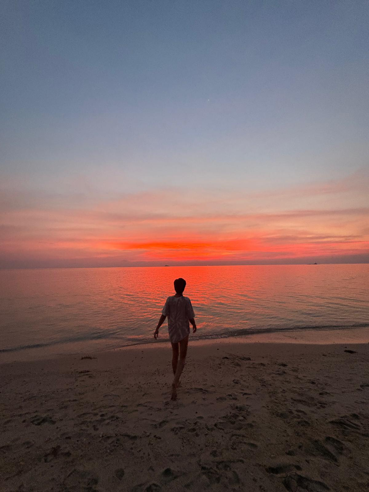
Yüzmeden partilere, sabah koşularından yoga ve ritüellere, en güzel kafelerden unutulmaz lezzetlere kadar bir adada her şey mi olur? Evet, olur. Koh Phangan tam olarak böyle bir ada!
Koh Phangan, Tayland Körfezi’nde yer alan ve tropik doğasıyla öne çıkan
en özel adalardan biri. Palmiye ağaçlarıyla çevrili uzun plajları, mavi ve sakin denizi,
yeşillikler arasına gizlenmiş küçük koyları ve etkileyici gün batımı manzaralarıyla
insanı ilk andan içine çeken bir atmosfere sahip. Adanın farklı bölgelerini keşfettikçe
her köşesinin kendine özgü bir karakteri olduğunu fark ediyorsunuz; kimi yerler
tamamen sakin ve doğayla iç içe, kimi yerler ise oldukça canlı ve hareketli.
Adada en keyifli şeylerden biri ise hiçbir plan yapmadan keşfe çıkmak.
Bir motor kiralayıp sahil yollarında ilerlerken karşınıza
aniden çıkan bir plajda durabilir, manzaralı bir kafede kahve içebilir ya da
yol üzerindeki küçük restoranlarda Tayland mutfağının en güzel örneklerini
deneyebilirsiniz. Bazen sadece sahil boyunca yürümek, bazen de gün batımını
izlemek için bir tepeye çıkmak bile burada başlı başına bir aktiviteye dönüşüyor.
Koh Phangan’ın atmosferi de oldukça farklı. Gün içinde sakin ve huzurlu bir
ada gibi hissettirirken akşam olduğunda bambaşka bir enerjiye bürünüyor.
Gece pazarlarının ışıkları, sahil barlarından gelen müzik sesleri ve
gün batımını izlemek için toplanan kalabalıklar adaya çok canlı bir
ruh katıyor. İsterseniz tamamen sakin bir gün geçirebilir,
isterseniz adanın enerjisine karışıp gecenin ritmini yakalayabilirsiniz.
Belki de Koh Phangan’ın en güzel tarafı tam olarak bu: her gününüzün
bir öncekinden farklı geçmesi. Bir gün keşif, bir gün dinlenme,
bir gün gün batımı, bir gün müzik… Ada size sürekli yeni bir deneyim
sunuyor ve ayrılırken arkanızda güzel anılar bırakıyor.
Tayland’ın resmi para birimi Baht (THB)’dir ve çoğu yerde nakit veya kredi
kartıyla
ödeme yapılabilir.
Bankamatiklerden kendi bankanızın kartıyla para çekmek de mümkün; fakat çektiğiniz miktara
bağlı olarak komisyon oranları artabilir. Bu nedenle yüksek miktarlar yerine, ihtiyacınız kadarını
çekmek hem güvenli hem de daha ekonomik olacaktır.
2025 itibarıyla ortalama kurlar yaklaşık olarak:
1 Tayland Baht ≈ 1,29 TL (yaklaşık değer)
1 USD ≈ 33-36 THB civarındadır.
Ada genelinde
yeme-içme, konaklama ve günlük harcamalar oldukça geniş bir fiyat aralığına sahip.
Sokak lezzetleri ve yerel restoranlarda oldukça uygun fiyatlı seçenekler
bulabilirken, manzaralı restoranlar ve popüler beach barlarda fiyatlar biraz daha
yükselebiliyor. Yine de genel olarak Koh Phangan’da hem lezzetli hem de bütçe dostu
alternatifler bulmak oldukça kolaydır.
Koh Phangan tropik iklime sahip olduğu için yılın büyük bir bölümünde ziyaret
edilebilecek bir ada. Ancak hava koşullarını göz önünde bulundurursak en ideal
dönem genellikle Aralık – Nisan ayları arası. Bu dönemde yağışlar
oldukça az, hava güneşli ve deniz oldukça sakin oluyor. Özellikle plajların ve
gün batımlarının tadını çıkarmak için en güzel zamanlardan biri diyebiliriz.
Mayıs – Eylül ayları arasında hava hala oldukça güzel olsa da
zaman zaman kısa süreli tropik yağmurlar görülebiliyor. Ancak bu yağmurlar
genellikle uzun sürmediği için adayı keşfetmeye engel olmuyor.
Ekim ve Kasım ayları ise Koh Phangan’da yağışların en yoğun
olduğu dönem olarak biliniyor. Bu aylarda bazı günler oldukça yağmurlu
geçebiliyor. Eğer daha güneşli ve kuru bir tatil planlıyorsanız bu dönemi
çok tercih etmemeniz daha iyi olabilir.
Koh Phangan, yeme-içme konusunda oldukça zengin seçeneklere sahip bir ada.
Sokak tezgahlarından yerel Tay restoranlarına, manzaralı kafelerden sahil barlarına
kadar her zevke hitap eden birçok alternatif bulabiliyorsunuz. Özellikle gece
pazarlarında Tayland mutfağının en sevilen lezzetlerini uygun fiyatlarla denemek
mümkün. Bunun dışında adanın farklı noktalarında kahvaltı ve brunch için oldukça
başarılı kafeler de bulunuyor.
Biz de adada kaldığımız süre boyunca farklı yerleri deneyimleme fırsatı bulduk.
Aşağıda en sık gittiğimiz ve en çok keyif aldığımız mekanları bulabilirsiniz.
Bunun dışında alternatif olarak değerlendirebileceğiniz birkaç güzel yeri de
listenin sonunda paylaştık.
Koh Phangan’a doğrudan uçuş bulunmadığı için adaya ulaşım genellikle
feribot ile sağlanıyor. En yaygın rota, Tayland’ın güneyindeki
Koh Samui veya Surat Thani üzerinden adaya geçmek.
Koh Samui’den Koh Phangan’a feribot yolculuğu yaklaşık 30–45 dakika
sürerken, Surat Thani’den yapılan feribot yolculuğu genellikle
2 – 2,5 saat civarında sürüyor.
Tayland’ın farklı şehirlerinden önce uçak veya otobüs ile
Surat Thani ya da Koh Samui’ye ulaşabilir,
buradan düzenli olarak kalkan feribotlarla Koh Phangan’a geçebilirsiniz.
Feribot seferleri gün boyunca oldukça sık yapıldığı için ulaşım genellikle
rahat ve kolaydır.
Şehir içi ulaşım için ise adada en pratik yöntem
motor kiralamak. Ada yolları genellikle iyi durumda ve
motor ile plajlar, kafeler, gece pazarları ve yoga merkezleri gibi noktalar
kolayca ulaşılabilir. Günlük motor kiralama ücretleri genellikle
200–300 THB civarında. Bunun dışında taksi veya adaya özgü
minivan servisleri de mevcut, özellikle grup halinde seyahat ediyorsanız
daha rahat bir seçenek olabiliyor.
Koh Phangan’da konaklama seçenekleri oldukça geniş ve her bütçeye uygun.
Adanın farklı bölgeleri farklı deneyimler mevcut. Eğer sakinlik ve yoga merkezlerine yakınlık
istiyorsanız, adanın batı kıyısındaki Sri Thanu bölgesi en ideal noktalar arasında.
Burada hem huzurlu plajlar hem de wellness merkezleri, cafeler ve meditasyon alanları
mevcut.
Daha hareketli bir akşam hayatı ve barlar arıyorsanız Haad Rin bölgesi
tam size göre. Burada sahil kenarındaki otellerden hostellere kadar birçok seçenek bulabilirsiniz.
Full Moon Party döneminde konaklamak için bu bölge özellikle popüler ve yer bulması
zorlaşıyor.
Adada ayrıca orta bütçeli resortlar, bungalovlar ve butik oteller de mevcut.
Kendi başına bir kaçamak yapmak isteyenler için gizli koylarda veya tepelerde
bulunan villalar harika bir seçenek. Koh Phangan’da konaklamanın en güzel tarafı,
adadaki çoğu yerin denize, plajlara ve doğal güzelliklere çok yakın olması.
Kısacası, ister sakin bir inziva, ister hareketli bir ada deneyimi arıyor olun,
Koh Phangan’da mutlaka size uygun bir konaklama bulabilirsiniz.
Seyahatlerimizi planlarken kullandığımız araçlara göz atın.
Burada yer alan bağlantılar bağlı kuruluş (affiliate) linkleridir.
Bu linkleri kullanarak blogumuzu sürdürmemize yardımcı oluyorsunuz.
Sizin için herhangi bir ek maliyet oluşturmaz, ancak bizim misyonumuzda büyük fark yaratabilir.
🌿
🏨Size en uygun oteli bulun. Rezervasyonlarınızı Booking.com üzerinden yapabilirsiniz.
✈️En uygun uçuş fiyatlarını Skyscanner.com adresinden bulabilirsiniz.
🎟️Çevrim içi tur ve etkinlik rezervasyonları için GetYourGuide.com kullanın.
🏕️Yürüyüş, kamp, bisiklet ve daha fazlası için Decathlon.com geniş bir yelpaze sunuyor.
Koh Phangan’ı keşfetmenin en güzel yolu adanın farklı köşelerine uğrayarak kendi rotanızı oluşturmak. Hazırladığımız haritada en sevdiğimiz plajları, gün batımı noktalarını, kafeleri ve keşif duraklarını bulabilirsiniz. İsterseniz bu noktaları takip ederek kendi Koh Phangan rotanızı kolayca planlayabilirsiniz.
Birbirinden keyifli, eğlenceli ve yeri geldiğinde huzur dolu plajlarını mutlaka keşfetmenizi istiyoruz. Gün doğumunda denizin üzerinde beliren ilk ışıkları ve gün batımında gökyüzünü turuncuya boyayan manzaralarıyla ada sizi kendine hayran bırakacak.
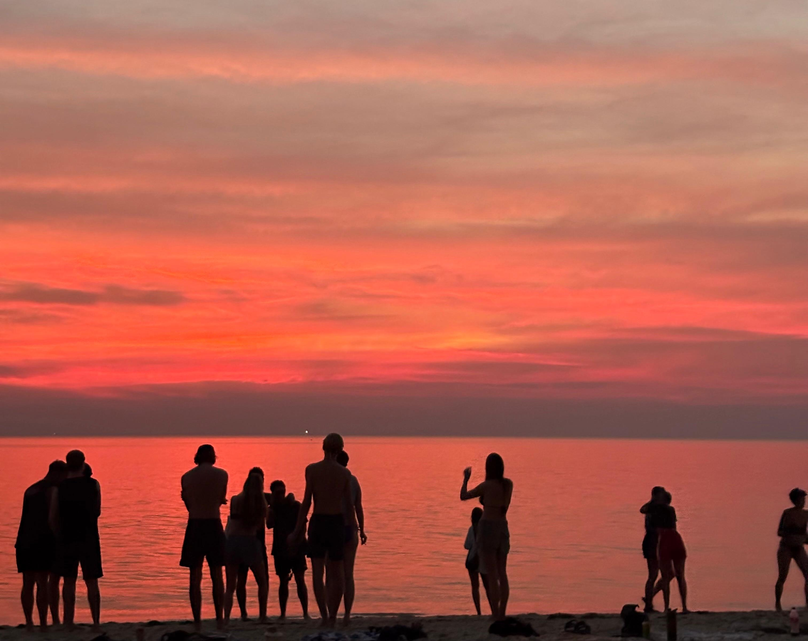
Bizim 1 numaralı plajımız olan Zen Beach, Koh Phangan’ın en özgün ve ruhu olan plajlarından biri. Adanın kuzeybatısında, Srithanu bölgesine yakın konumda bulunuyor ve özellikle gün batımı saatlerinde bambaşka bir atmosfere bürünüyor.
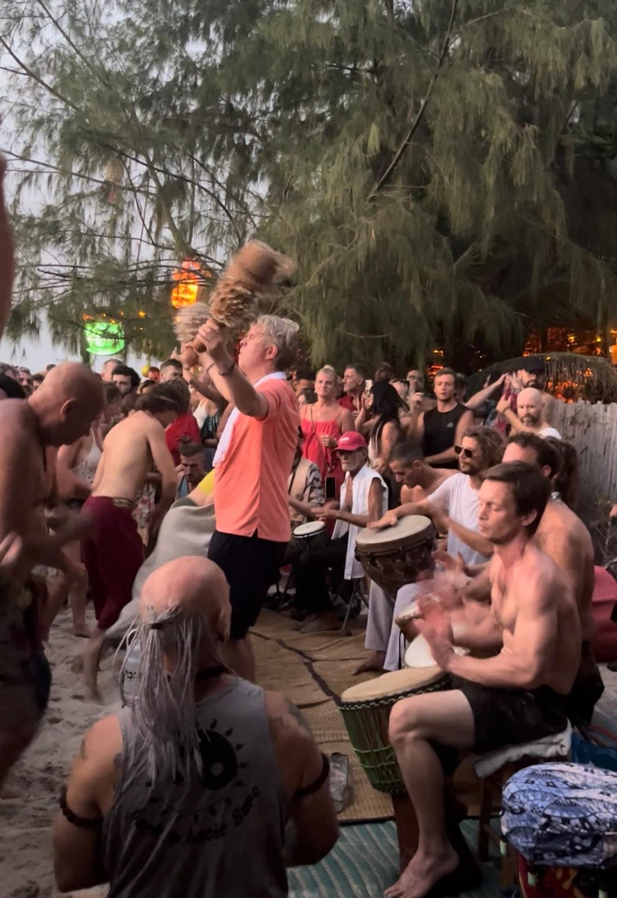
Genellikle cuma, cumartesi ve pazar günleri özel etkinlikler oluyor ve o topluluk hissi gerçekten
inanılmaz. Özellikle “Happy Saturday” ya da “Happy Sunday” gibi sunset session’larda sahil
müzikle doluyor; insanlar güneş batarken çıplak ayakla dans ediyor, gülüyor, sohbet ediyor ve herkes
kendi halinde gönlünce eğleniyor. Bu etkinliklerde yerel ve uluslararası DJ’ler hafif, soul’dan deep
house’a uzanan ritimlerle gün batımını daha da özel kılıyor. Kimi zaman canlı davul çemberleri
ya da akustik müzikler bile oluyor ve fire show gibi küçük performanslar görülebiliyor; hepsi
denizin ve gün ışığının o büyülü tonlarıyla birleşince gerçekten harika bir vibe ortaya çıkıyor.
Burası ayrıca yoga topluluğu arasında çok popüler. Srithanu zaten adanın yoga
merkezi olarak biliniyor, bu yüzden gün batımında meditasyon yapanları, nefes çalışmaları yapan
grupları görmek ve dahil olmak da çok normal.
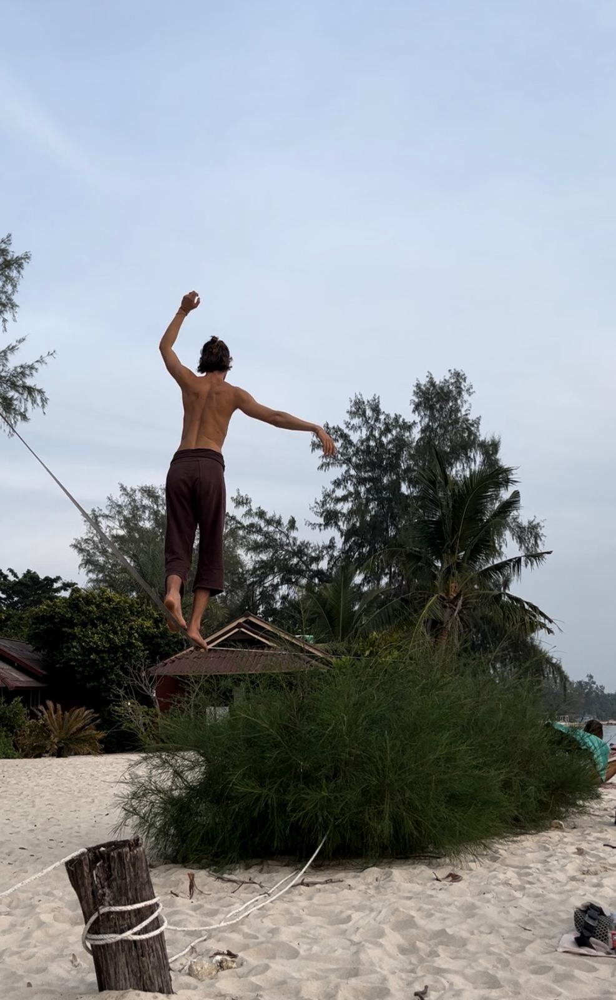
Zen Beach tam olarak arada bir yerde: Full Moon tarzı çılgın bir parti yok ama müzik, dans ve topluluk enerjisi hep hissediliyor. Daha bilinçli, özgür ruhlu ve alternatif bir ortam düşünebilirsiniz.
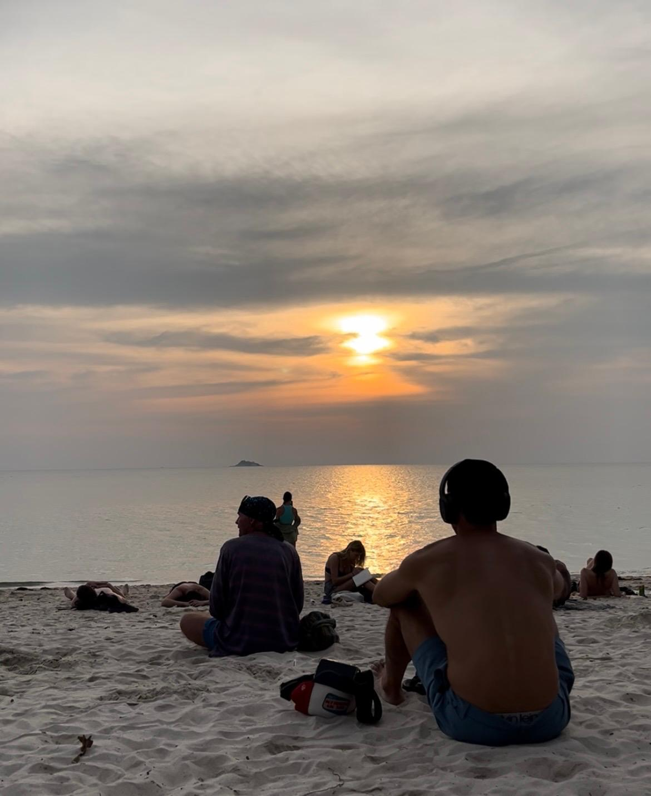
Buranın küçük ama keyifli bir beach barı var; atıştırmalıklardan lezzetli yemeklere, ferahlatıcı
içeceklerden taze meyve sularına, dilediğiniz gibi hazırlanan smoothie’lerden soğuk bir biraya kadar
her şeyi bulabilirsiniz.
Ve size çok ciddi bir uyarı: Eğer plaja motorla erken gelmişseniz,
bıraktığınız yeri ya
iyice hafızanıza kazıyın, ya belirli bir işaret belirleyin, ya da mutlaka bir fotoğrafını çekin.
Öğle saatleri sakin olan
otopark, akşam ilerledikçe resmen bir motor pazarına dönüşüyor ve motorunuzu bulmak zorlaşabiliyor.
Biz ilk gittiğimizde bunu yapmadığımız için çıkışta yaklaşık 1 saat motorumuzu aramıştık 😄
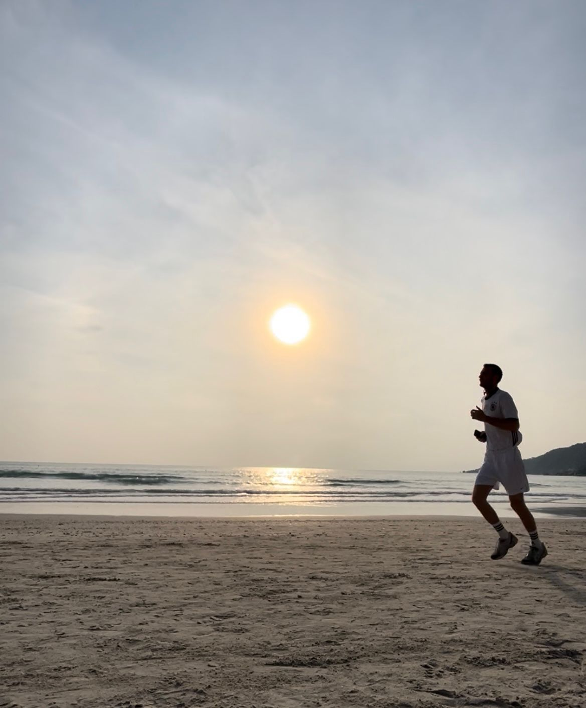
Haad Rin’in doğuya bakan tarafı olan Sunrise Beach, adanın en bilinen plajlarından
biri. Evet, burası
dünyaca ünlü Full Moon Party’nin yapıldığı yer. Ama sadece partiden ibaret değil; özellikle sabah
saatlerinde bambaşka bir havası var.
Adı boşuna Sunrise değil. Erken kalkarsanız güneşin denizin içinden yükseldiği o anlara şahit
olabilirsiniz. Sabahın ilk ışıklarıyla birlikte plajda yürüyüş yapanları, hafif tempoda koşuya
çıkanları görmek çok normal. Uzun ve geniş sahili sayesinde yürüyüş ve koşu için gerçekten ideal.
Kumun üzerinde, deniz manzarası eşliğinde güne başlamak hem zihni hem bedeni inanılmaz iyi
hissettiriyor.
Biz de burada her sabah düşük tempo koşularımızı ihmal etmedik. Sabah serinliğinde, kalabalık henüz
uyanmamışken koşmak adanın enerjisini en güzel şekilde hissettiriyor. Koşu sonrası kısa bir deniz
molası ise günün en keyifli ödülü oluyor.
Deniz kimi zaman dalgalı, tabanı tamamen kum. Sabah saatlerinde su daha sakin ve berrak
oluyor. Gün ilerledikçe insanlar yavaş yavaş şezlonglara yerleşiyor, yüzüyor, kitap okuyor.
Sahil boyunca sıralanan restoran ve kafeler ise gün boyu plaja ayrı bir hareket katıyor; ister
kahvenizi alıp deniz manzarasına karşı oturun, ister öğle yemeği için kısa bir mola verin, seçenek
oldukça fazla.
Akşamüstüne doğru ise plajın enerjisi değişmeye başlıyor.
Full Moon döneminde sahil dev bir açık hava eğlence alanına dönüşse de, diğer günlerde Sunrise Beach
hem spor yapanların hem de keyifli bir plaj günü geçirmek isteyenlerin buluşma noktası.
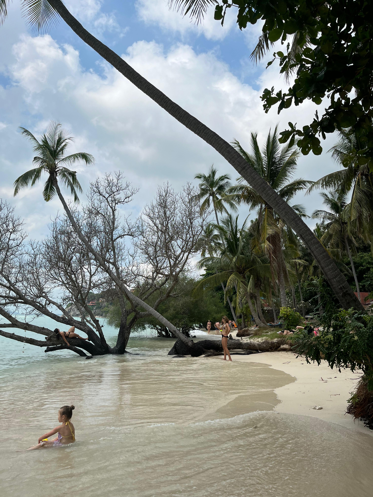
Koh Phangan’ın güneyinde yer alan Haad Rin’in bu tarafı (Sunset Beach), adanın en sakin ve huzurlu plajlarından biri. Bizim ikinci favori plajımız kesinlikle burası. “Haad” Tayca’da plaj demek, yani aslında adı direkt Rin Plajı anlamına geliyor. Çoğu kişi Haad Rin’i sadece Full Moon ile biliyor ama o kalabalık taraf Sunrise Beach. Bizim bahsettiğimiz yer ise güneye bakan, çok daha sakin olan kısmı.
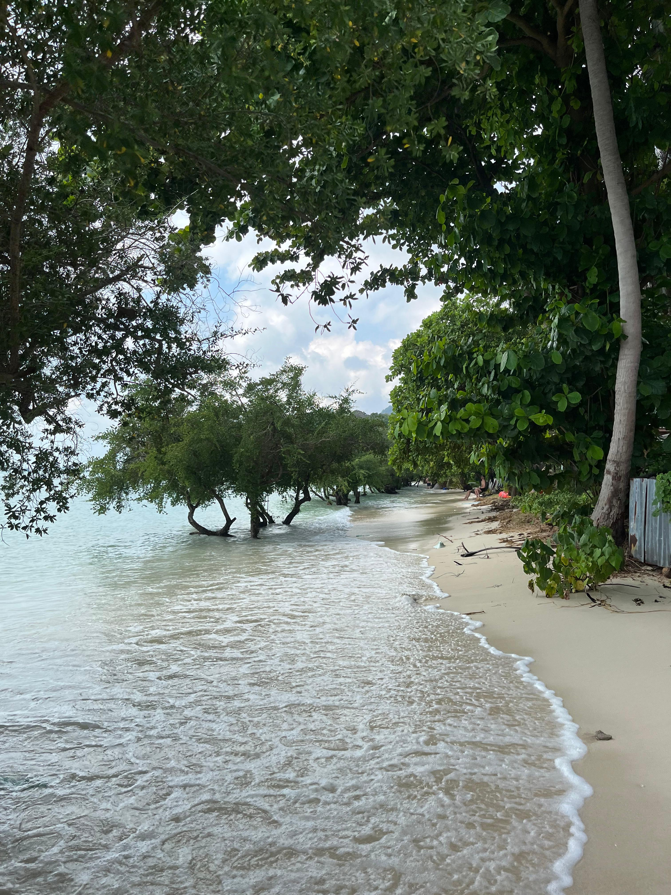
Sahil incecik ve tertemiz kumlara sahip. Deniz tamamen kum ve su pırıl pırıl. En güzel detaylardan biri ise ağaçların resmen denizin içinden yükseliyor olması. Bazıları yan yatmış, bazıları suya doğru uzanmış… Ortaya hem kartpostal gibi hem de inanılmaz huzurlu bir görüntü çıkıyor. İstersen ağaçlara uzan, istersen incecik kumların üzerinde yürüyüş yap; burada her şey çok doğal ve çok keyifli.
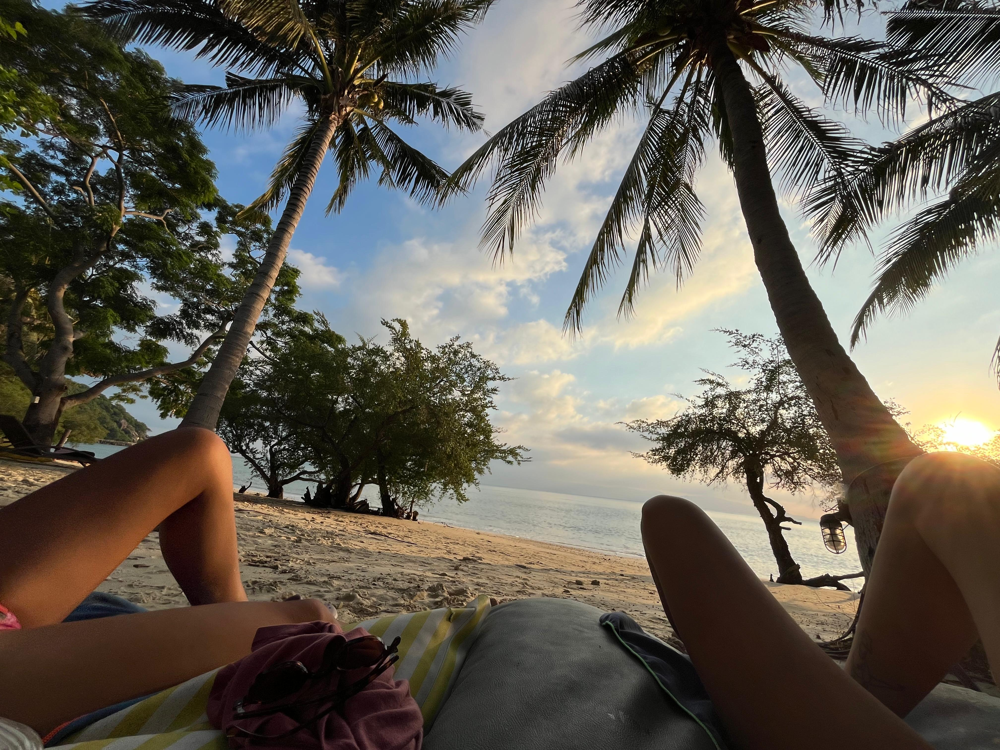
Çocuklu aileler için de oldukça uygun bir plaj. Deniz sığ ve dalgasız, rahat rahat yüzülebiliyor. Biz
bu plaja The Cabin Beach Resort’un olduğu taraftan giriş yaptık. O taraf sakin olduğu için motoru
neredeyse istediğiniz yere bırakabiliyorsunuz; otopark konusunda hiç sorun yaşamadık.
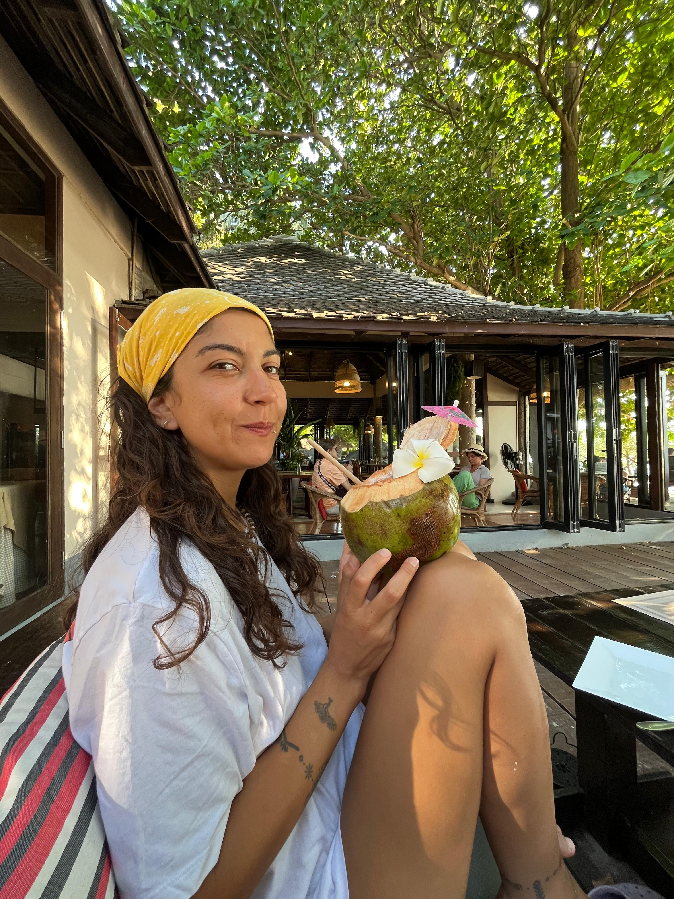
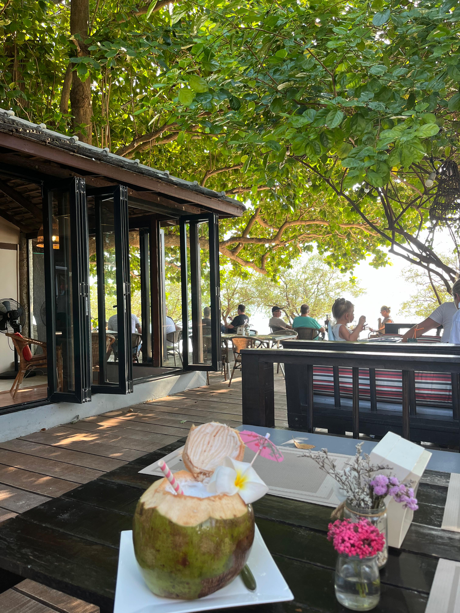
Plaj boyunca denize girip çıktık, uzun uzun yürüyüş yaptık. Yol üzerinde CocoHut Restaurant & Bar’a denk geldik ve birer taze hindistan cevizi suyu içtik; lezzetli ve ferahlatıcıydı.
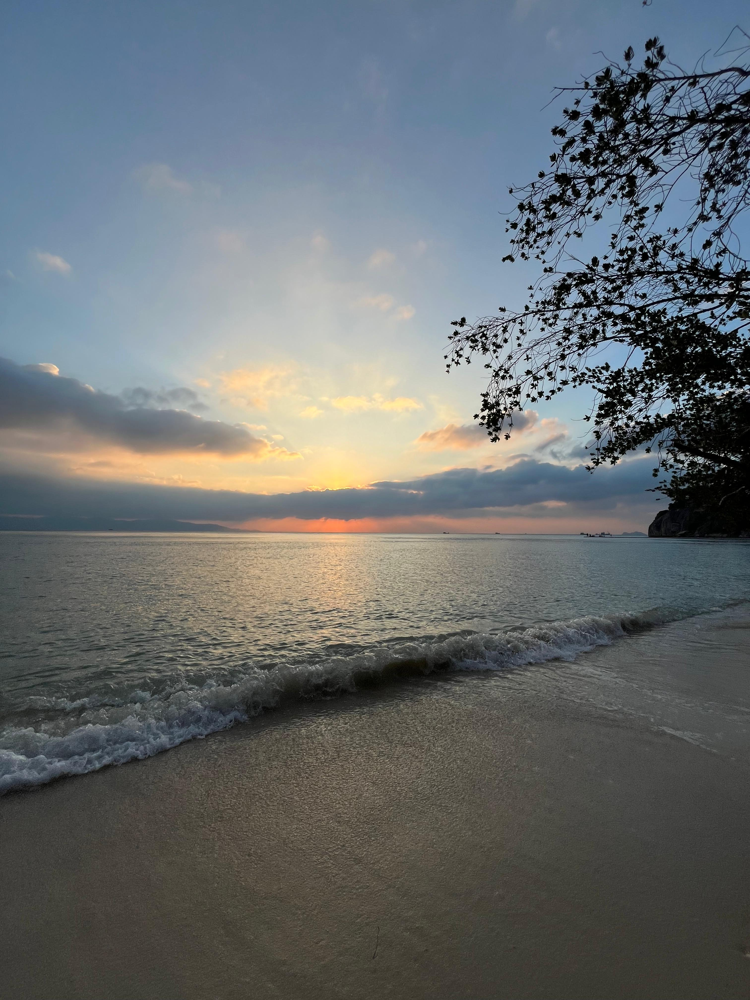
Gün ilerledikçe kalabalık dağılmaya başladı ve gün batımı saatlerinde ortam tamamen sakinleşti.
Gökyüzünün yavaş yavaş renk değiştirmesi, denizin üzerindeki yansımalar… Günün sonunda o rahatlama
hissi gerçekten tarif edilemezdi.
Ancak küçük bir uyarı: Güneş battıktan sonra çok geç kalmamaya çalışın. Dönüş yolu
yer yer dik ve
dönemeçli, ayrıca ışık seviyesi oldukça düşük. Özellikle motorla dönecekseniz, karanlık iyice
çökmeden yola çıkmak çok daha güvenli ve rahat olacaktır.
Bottle Beach, Koh Phangan’ın en bakir ve en izole plajlarından biri. Adanın kuzeyinde yer alıyor ve ulaşımı biraz zahmetli olduğu için hala o “keşfedilmemiş” hissini koruyor. Zaten belki de en güzel tarafı bu.
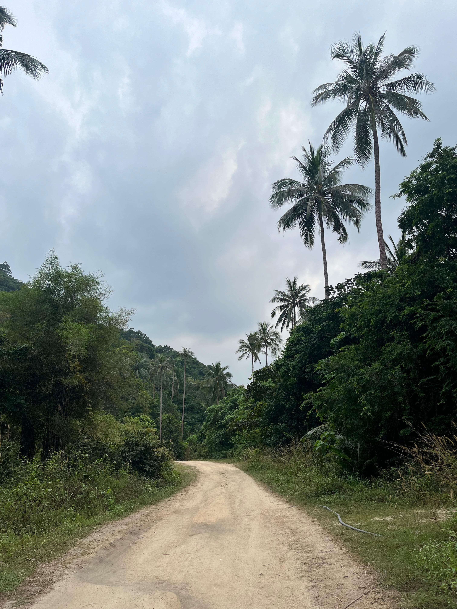
Buraya ya tekneyle ya da oldukça engebeli bir toprak yoldan motorla ulaşabiliyorsunuz. Motorla bir noktaya kadar geldikten sonra yol iyice zorlaşıyor; bizim deneyimimize göre, burada motoru bırakıp yürümek gerekiyor. Yaklaşık 2 km kadar yürüyüş yaparak sahile ulaşabiliyorsunuz. Ama endişelenmeyin: isteyenler arazi tipi araçlarla da plaja götürülüyor. Ücret yaklaşık 100 THB. Yani biraz macera, biraz da kolaylık seçeneği elinizde.
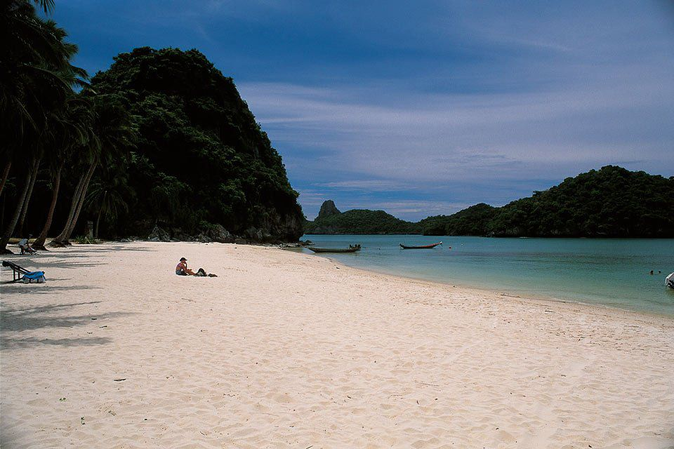
Bottle Beach diğer plajlara göre çok daha sakin. Büyük beach barlar, yüksek müzik ya da kalabalık
yok. Daha çok kafa dinlemek, yüzmek ve doğayla baş başa kalmak isteyenler için ideal. Deniz genelde
dalgasız ve tabanı kum olduğu için yüzmesi çok keyifli. Uzun uzun yüzebilir, ardından kumlara uzanıp
saatlerce hiçbir şey yapmadan manzarayı izleyebilirsiniz.
Burada birkaç küçük bungalow işletmesi ve salaş restoran var. Günlük gelenler için de basit ama
yeterli seçenekler bulunuyor. Lüks aramayın; doğallık, sakinlik ve o tropikal ada hissi burada ön
planda.
Açıkçası biz bu bungalowlarda konaklama seçeneğinden önceden haberdar değildik. Gidip görünce
gerçekten büyülendik. Denize birkaç adım mesafede, tamamen doğanın içinde uyanma fikri bile
inanılmaz huzurlu hissettirdi. Eğer planınızı esnetebiliyorsanız size tavsiyemiz kesinlikle en az
bir gece sırt çantalarınızla gelip burada kalmanız.
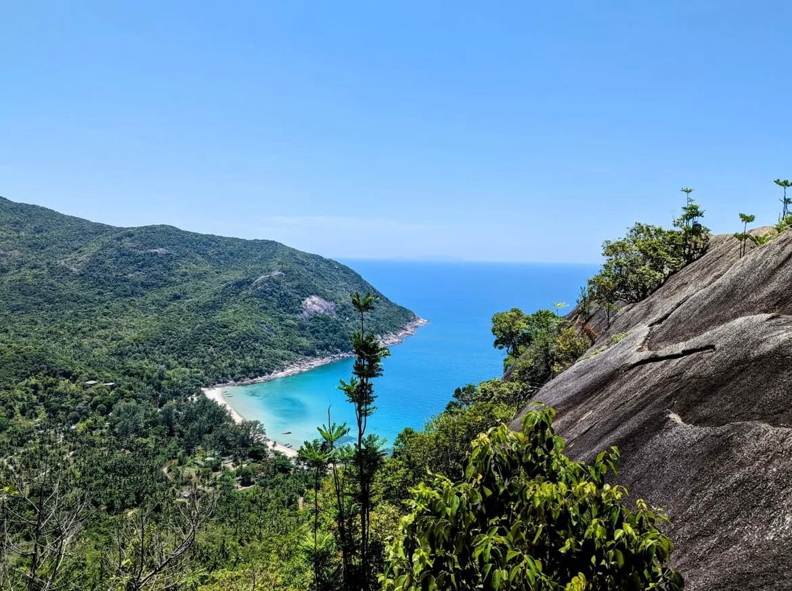
Bottle Beach’e kadar gelmişken seyir tepesine çıkmadan olmaz dedik. İyi ki de
demişiz. Biz çıktık ve
gerçekten harikaydı. Yukarı vardığınız anda bütün koy ayaklarınızın altına seriliyor. O hilal
şeklindeki sahil, turkuaz deniz ve etrafını saran yemyeşil tepeler… Manzara tam anlamıyla kartpostal
gibi.
Viewpoint’e iki farklı şekilde ulaşabiliyorsunuz: Bottle Beach’e doğru yürüyüş
yaparken tabelaları
takip ederek ya da plajdan yukarı doğru çıkan patikayı kullanarak. Biz plajdan çıkan patikayı tercih
ettik. Yürüyüş çok uzun değil ama hafife alınacak gibi de değil; yer yer dik ve kayalık, özellikle
yağmurdan sonra zemin biraz kaygan olabiliyor. Ortalama 45 dakika kadar sürdü ama sıcak havada efor
istiyor. Spor ayakkabı giymek ve yanınıza su almak kesinlikle önemli.
Biz sabahın erken saatlerinde çıktık ve ışık tam olması gerektiği gibiydi. Güneş denize vurdukça
renkler değişiyor; turkuaz, mavi ve yeşilin tonları birbirine karışıyor. Fotoğraf çekmek için
inanılmaz bir nokta. Açık söyleyelim, Bottle Beach’e gelip buraya çıkmazsanız gerçekten büyük bir
güzelliği kaçırırsınız.
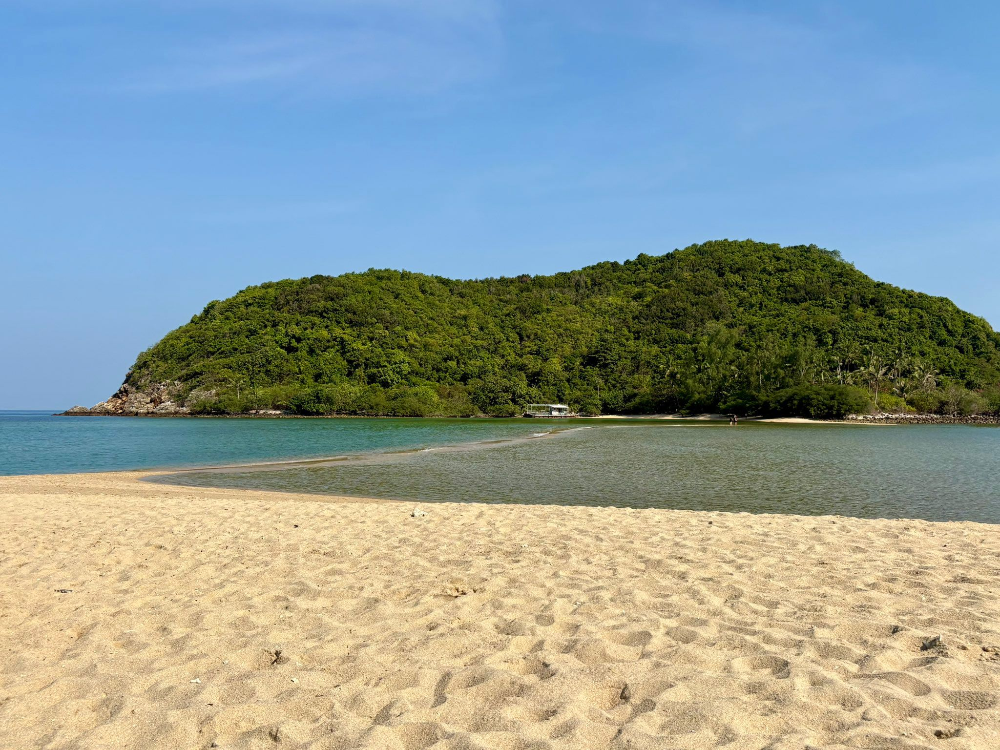
Mae Haad Beach, adanın kuzeybatısında bulunuyor. Burası özellikle dalış ve
şnorkel meraklıları için
popüler; çünkü sahil yakınlarındaki kayalık bölgelere sahip. Biz de burada şnorkel yapma fırsatı
bulduk ve gerçekten beklediğimizden çok daha keyifliydi. Sahilden birkaç metre açıldıktan sonra
kayalık alanlar başlıyor ve suyun altı bir anda canlanıyor. Balıklar minik sürüler halinde
geziyorlardı,
aralarda da kayalıkların arasında oluşmuş mercanlar vardı. Çok abartılı bir su altı dünyası değil
ama ilk kez gördüğünüzde yüzünüzü gülümseten, keyifli ve yeterince güzel bir deneyim.
Bizden tavsiye; gitmeden önce hava durumunu mutlaka kontrol edip planınızı ona göre
yapın. Hava açık
ve güneşliyken su çok daha berrak oluyor; o zaman dalış ya da şnorkel yapmak isteyeceğinizi
düşünüyoruz 😉 Ayrıca kayalık bölgelerde yüzdüğünüz için deniz ayakkabısı giymek de iyi bir fikir
olabilir.
Deniz
genellikle dalgasız ve sığ, bu yüzden yüzmek ve çocuklarla vakit geçirmek için de ideal.
Plajın en dikkat çekici özelliği, küçük bir ada ile anakarayı bağlayan doğal bir kum seti
(sandbar).
Gelgit saatlerine göre yürüyerek adaya geçebilir ve mini bir keşif turu yapabilirsiniz. Fotoğraf
çekmek için de mükemmel bir nokta; özellikle gün doğumu ve gün batımında ışık inanılmaz.
Mae Haad Beach çevresinde birkaç salaş restoran ve küçük bungalow işletmesi var, ama genellikle
kalabalık olmuyor. Yani, Bottle Beach gibi tamamen izole olmasa da, huzurlu ve tropikal ada havasını
koruyan bir seçenek. Koh Phangan’da hem yüzmek hem de biraz keşif yapmak istiyorsanız, Mae Haad
Beach güzel bir alternatif.
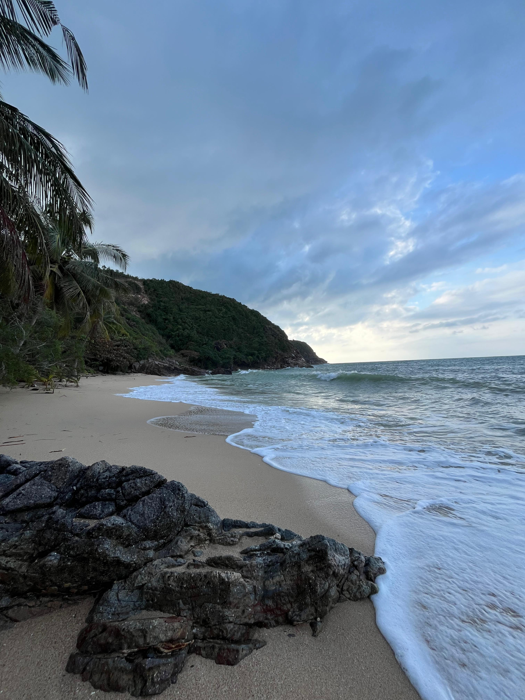
Mae Haad Beach’te yürüyüş yaparken tamamen tesadüfen küçük bir keşif daha yaptık. Sahilin biraz ilerisine doğru yürürken oldukça sakin ve neredeyse boş bir koya denk geldik. Sahilde kimsecikler yoktu; denizin sesi ve doğanın içinde sanki adada yalnız kalmışız gibi hissettik.
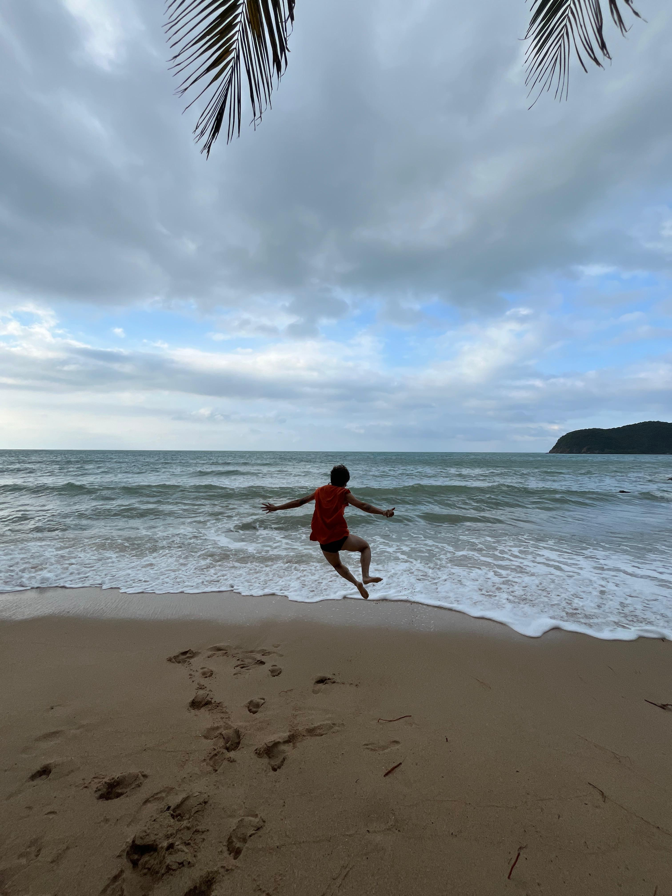
Saatlerce oturup yüzdük, eğlendik ve bu huzurlu atmosferin tadını çıkardık. Sonradan öğrendik ki burası aslında adadaki nude beachlerden biriymiş. Açıkçası burası biraz gizli kalsa fena olmaz gibi ama yolunuz düşerse siz de bir uğrayın deriz 🙂
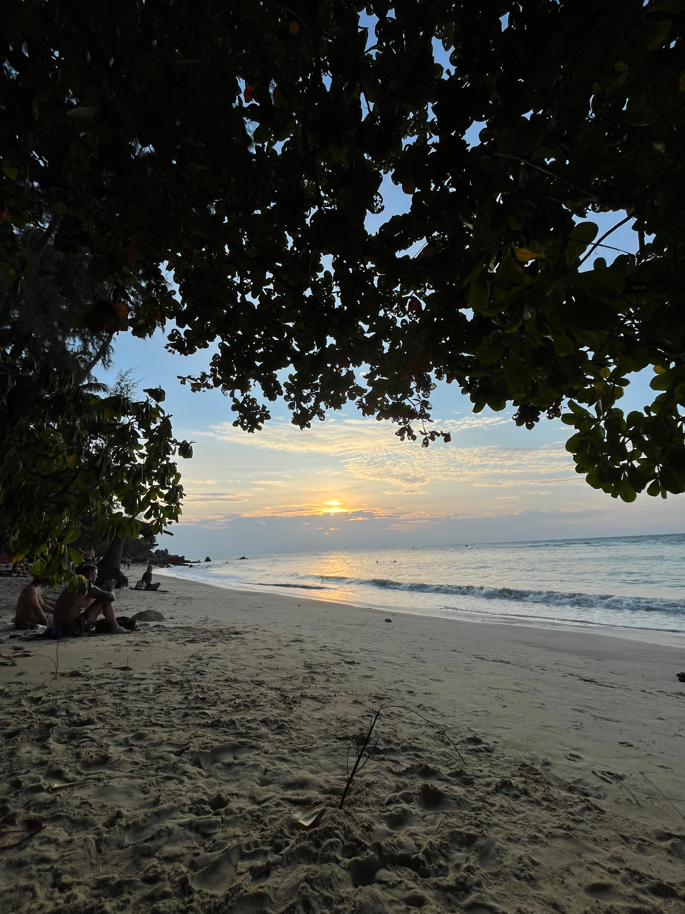
Secret Beach, Koh Phangan’ın batı kıyısında yer alan küçük ama her şeyi
bulabileceğiniz plajlardan
biri. Bizce aslında çok da "secret" değil ama samimi ve butik bir havası var. Gün batımı saatlerinde
ortam gayet sakin.
Plaj oldukça kompakt; ince kumlu bir sahil, turkuaz tonlarında berrak bir deniz ve arkada
palmiyelerle çevrili küçük bir koy düşünün. Deniz genelde sakin ve yüzmek için çok uygun.
Secret Beach’i farklı kılan şey biraz da atmosferi. Sahil boyunca birkaç şık ama salaş beach bar ve
restoran bulunuyor. Gün içinde sakin bir yüzme molası verebilir, öğleden sonra bir smoothie ya da
kokteyl eşliğinde manzaranın tadını çıkarabilirsiniz. Akşamüstü ise gökyüzü turuncu ve pembe tonlara
büründüğünde ortam daha da keyifli hâle geliyor.
Ulaşımı oldukça kolay; ana yoldan kısa bir yürüyüşle sahile inilebiliyor. Yani Bottle Beach gibi
maceralı bir yolculuk gerektirmiyor. Hem rahat ulaşım hem de güzel gün batımı isteyenler için
dengeli bir seçenek.
Eğer “çok izole olmasın ama kalabalık parti plajı da olmasın” diyorsanız, Secret Beach Koh
Phangan’daki en ideal duraklardan biri.
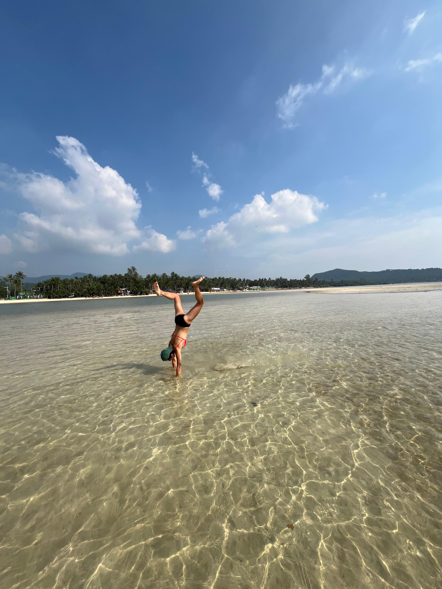
Hin Kong Beach, Koh Phangan’ın batı kıyısında yer alan ve özellikle gün batımıyla
ünlenen sakin
plajlardan biri. Burası yüzmekten çok manzara, huzur ve gün batımı keyfi için tercih ediliyor. Deniz
oldukça sığ ve gelgit etkisi var. Deniz çekildiğinde geniş kum ve kayalık alanlar ortaya çıkıyor.
Sahil boyunca butik beach barlar, yoga alanları ve chill konseptli kafeler var. Özellikle akşamüstü
saatlerinde insanlar minderlerde oturup müzik eşliğinde güneşi batırıyor. Parti havası yok; daha çok
sakin, bohem ve rahat bir ortam var.
Eğer yüzmek istiyorsanız kesinlikle başka plajlar daha uygun; ama “manzaraya karşı
içeceğimi yudumlayayım, gün batımını izleyeyim” diyorsanız Hin Kong tam size göre.
Koh Phangan, sadece plajlarıyla değil, adanın iç kısımlarında saklı doğal güzellikleriyle de ünlü. Bunlardan en dikkat çekeni şelaleler. Adada birkaç şelale var. Hem doğa yürüyüşü yapmak hem de serinlemek için harika yerler.
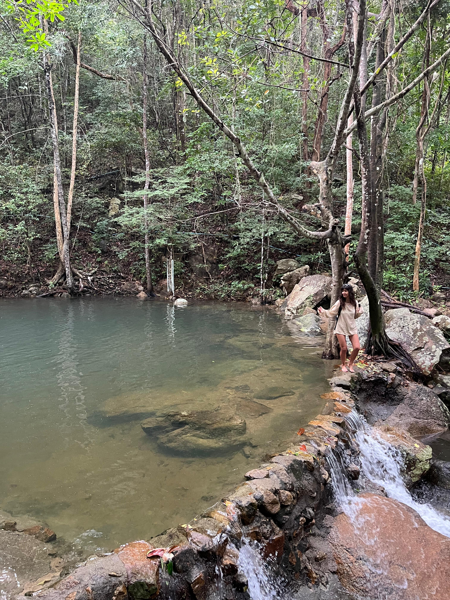
Biz Paradise Şelalesi’ne Malibu Beach’e giderken uğradık ve küçük bir mola gibi oldu. Giriş için kişi başı 30 THB ödüyorsunuz. Şelale çok büyük ve görkemli değil ama buna rağmen doğanın içindeki yeşile, suyun akışına ve serin havuzlara hayran kalmamak mümkün değil. Sadece suya ayaklarımızı sokup etrafı izlemek dahi keyifliydi. Eğer yolunuz Malibu Beach’e düşerse, birkaç dakikanızı ayırıp buraya uğramanızı kesinlikle tavsiye ederiz.
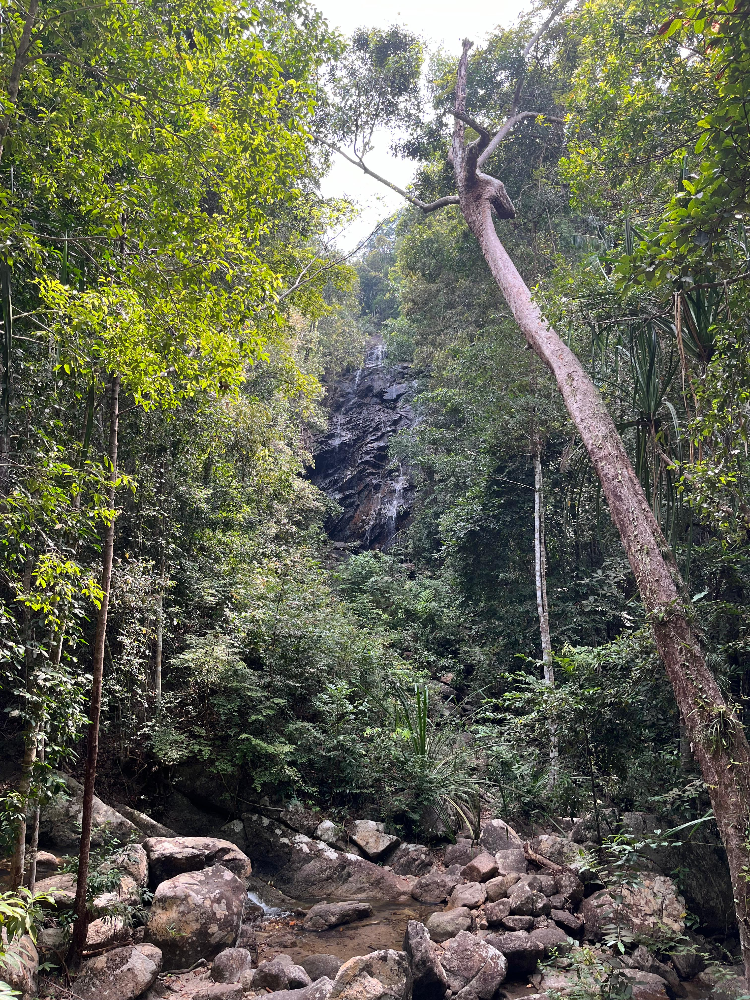
Phaeng Şelalesi aslında iki farklı bölümden oluşuyor: Phaeng Noi (küçük) ve
Phaeng Yai (büyük).
Şelaleye ulaşmak için Than Sadet Koh Phangan National Park girişinden giriyorsunuz
ve 100 THB
ödüyorsunuz. Sonrasında yukarı doğru ilerlemeye başlıyorsunuz. Park ve
giriş detaylarını aynı sayfadaki Than Sadet
başlığında ayrıca anlattım; gitmeden önce oraya da göz atmanızı öneririm.
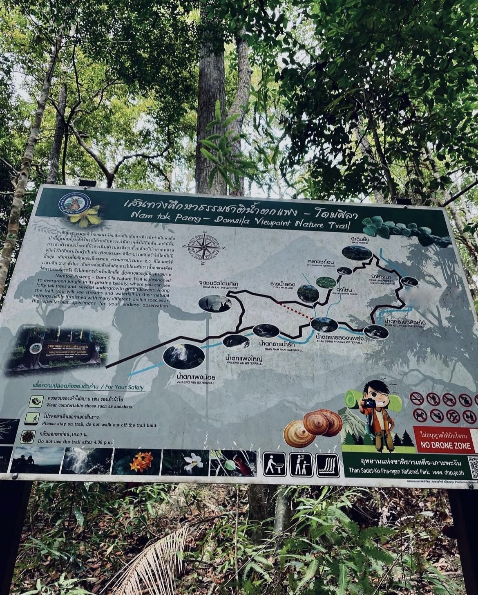
İlk olarak Phaeng Noi (küçük Phaeng) kısmına ulaşıyorsunuz. Burası daha sakin, ulaşımı daha kolay bir bölüm. Kısa bir patikadan sonra doğal havuzların olduğu alana varıyorsunuz.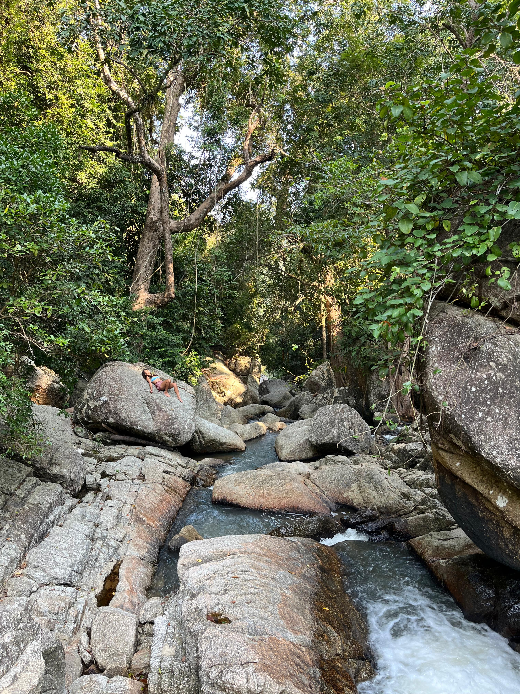
Than Sadet Waterfall, Koh Phangan’ın en güzel şelalelerinden biri bizce. Adanın doğu kıyısına yakın konumda ve tamamen doğanın içinde, sakin bir atmosferi var. Diğer şelalelere göre daha geniş bir alana yayılıyor. Tek bir noktadan dökülen yüksek bir şelale değil, kayaların arasından basamak basamak akan doğal bir yapı düşünün.
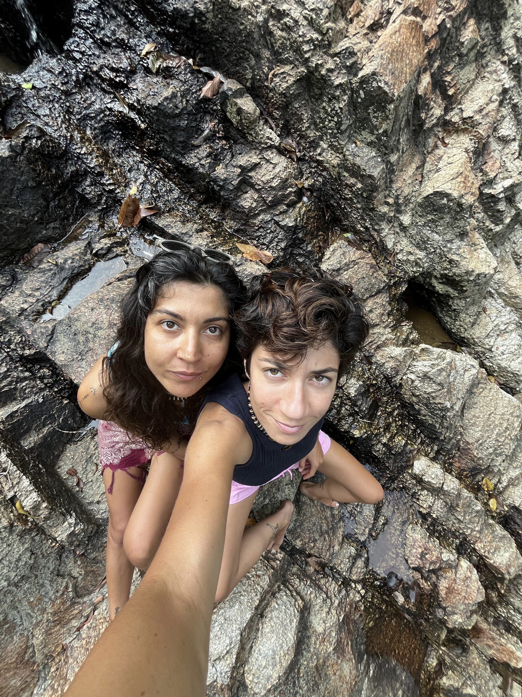
Taşların üzerinde sekerek, kendinizi doğanın bir parçası gibi hissederek ilerliyorsunuz. Kimi zaman bir kayanın üzerine uzanıp suyun sesi eşliğinde gökyüzünü izlemek bile mümkün. Burası sadece bir şelale değil, biraz yavaşlamak ve anın içinde kalmak için kesinlikle harika bir yer.
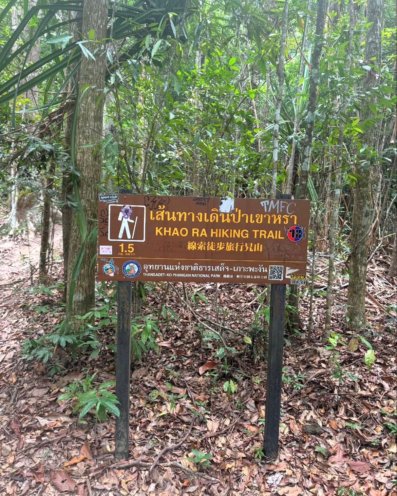
Khao Ra yürüyüşü, adanın en uzun ve en zorlu parkuru çünkü Koh Phangan’ın en yüksek
zirvesine
çıkıyorsunuz. Yani bu rota “kısa bir doğa yürüyüşü yapalım” planından biraz daha fazlası. Gerçekten
hazırlıklı gitmek gerekiyor.
Yaklaşık 1,5 - 2 saat sürecek tırmanış, Koh Phangan’ın ormanının içinden başlıyor. Yol boyunca küçük
bir dere ve küçük göletin yanından geçiyorsunuz; sonra rota giderek yükseliyor ve dağın daha yukarı
kısımlarına ulaşıyorsunuz.
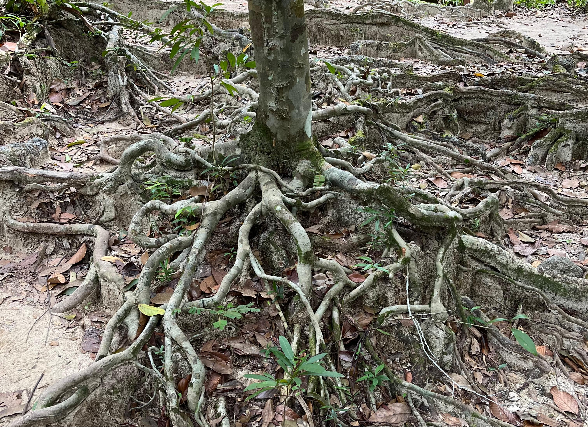
Son bölüm ise biraz daha dik ve yer yer tırmanış gerektiriyor. Ağaç köklerinin ve taşların üzerinden geçerek ilerliyorsunuz.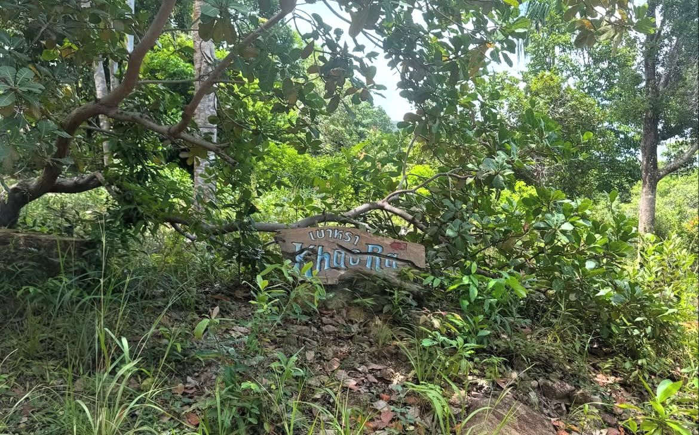
Tüm parkur (çıkış ve iniş) molalarla birlikte toplamda yaklaşık 4 saat sürdü. Bu yüzden yanınıza mutlaka yeterli su alın ve sağlam bir yürüyüş ayakkabısı giyin. Ayakkabı kesinlikle çok önemli.
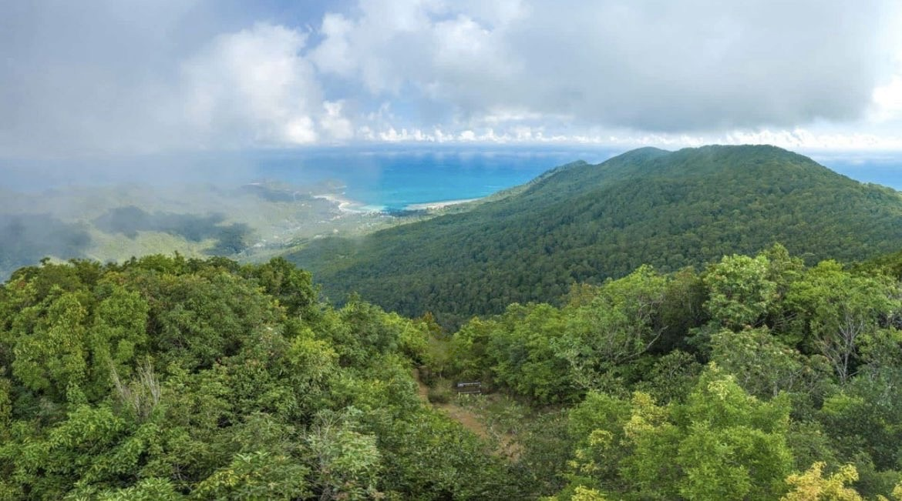
Zirveye vardığınız an, tüm yorgunluk orada bitiyor.
Bu yürüyüş için en iyi zaman kesinlikle erken sabah saatleri. Hava henüz çok sıcak ve nemli değilken
çıkmak hem daha güvenli hem de çok daha keyifli oluyor. Eğer bizim gibi orman yürüyüşlerinin ve
zorlayıcı parkurların hastasıysanız ve “adanın sadece plajlarını değil, zirvesini de görmek
istiyorum” diyorsanız, Khao Ra sizi hem zorlayacak hem de unutulmaz bir deneyim yaşatacak.
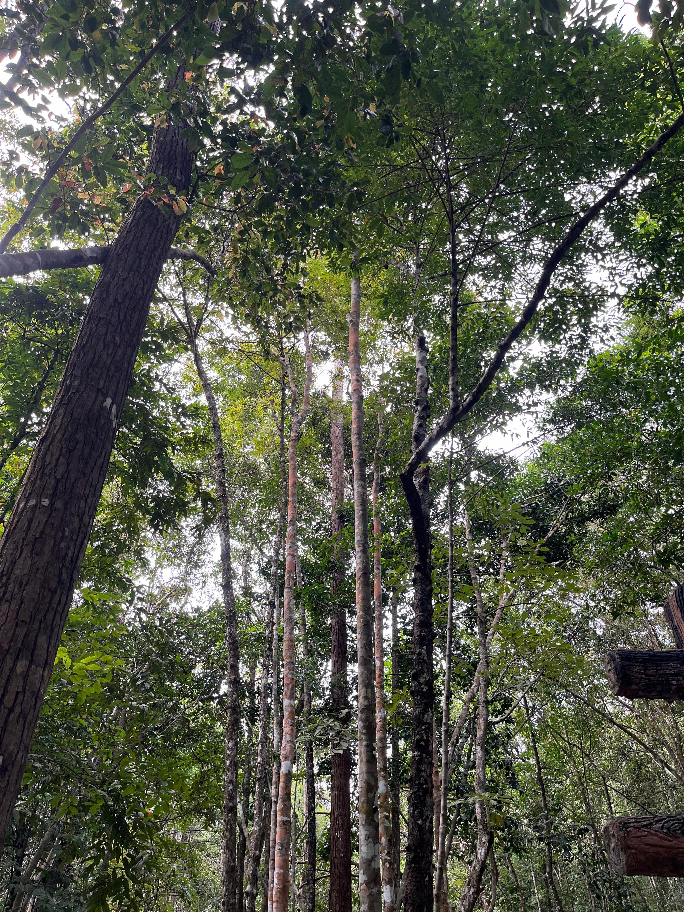
Than Sadet Koh Phangan National Park, Koh Phangan’ın sadece plajdan ibaret olmadığını gösteren
yerlerden biri. Burası adanın doğu kıyısını ve iç kesimlerindeki yoğun tropikal ormanları kapsıyor.
Yani aslında plajlardan çıkıp adanın “vahşi” tarafına geçtiğiniz yer tam olarak burası diyebiliriz.
Parkın iki ana girişi var.
Biri doğu tarafında, Than Sadet Waterfall’a yakın olan giriş. Daha çok sahil tarafına ve tarihi
kayalara yakın bölgeyi kapsıyor.
Diğeri ise adanın iç kesimlerine, yani Phaeng Waterfall ve trekking rotalarına açılan kuzey girişi.
Khao Ra ve Dom Sila Viewpoint yürüyüşleri de bu taraftan başlıyor.
Girişte kişi başı 100 THB ödüyorsunuz. Küçük bir gişe var ve sonrasında kendinizi
direkt ormanın içinde buluyorsunuz.
Parkın en güzel taraflarından biri sadece şelaleler değil; aynı zamanda trekking rotaları. Bu
bölgede iki farklı yürüyüş seçeneği var diyebiliriz: biri daha kısa ve keyifli olan Dom Sila
Viewpoint, diğeri ise adanın zirvesine çıkaran Khao Ra rotası.
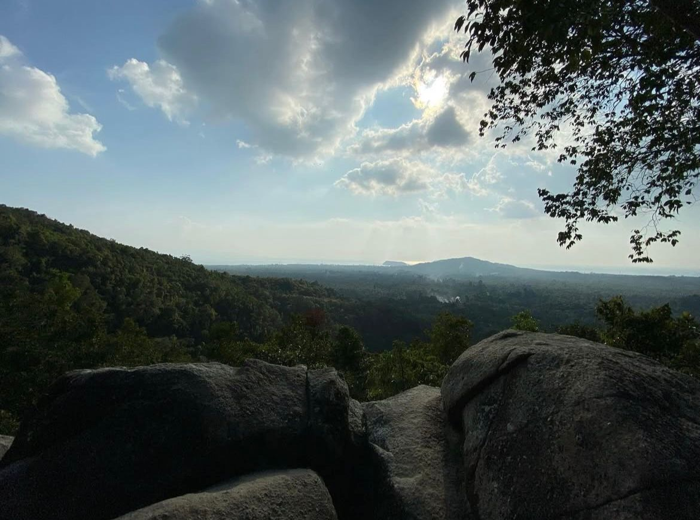
Dom Sila’ya çıkan patika, Phaeng Noi tarafindan başlıyor ve sizi ormanın içinden yavaş yavaş yukarı taşıyor. Çok uzun ya da aşırı zor bir parkur değil ama yer yer dikleşiyor. Zirve noktasında adanın kuzey tarafını tepeden izleyebileceğiniz sakin ve rüzgarlı bir manzara sizi bekliyor.
Eğer biraz daha meydan okuyan bir yürüyüş istiyorsanız, Khao Ra rotası bambaşka bir deneyim. Adanın
en yüksek noktasına çıkıyorsunuz ve parkur hem daha uzun hem de daha zorlu. Bu rotayı ve zirve
deneyimimizi detaylıca Khao Ra yazımızda anlattık.
Yani burada ister kısa bir doğa yürüyüşü yapın ister kendinizi zirveye taşıyın; Than Sadet Koh
Phangan National Park
adanın “orman yüzünü” keşfetmek için en güzel yerlerden biri 🌿
Ko Pha Ngan son yıllarda sadece plajlarıyla değil, aynı zamanda yoga, meditasyon ve wellness kültürüyle de oldukça bilinen bir ada haline gelmiş. Özellikle adanın batı tarafındaki Sri Thanu bölgesi, yoga merkezleri, sağlıklı kafeler ve spiritüel toplulukların yoğunlaştığı bir yer olarak öne çıkıyor. Bu bölgede yürürken neredeyse her köşede bir yoga stüdyosu, meditasyon alanı ya da detoks merkezi görmek mümkün.
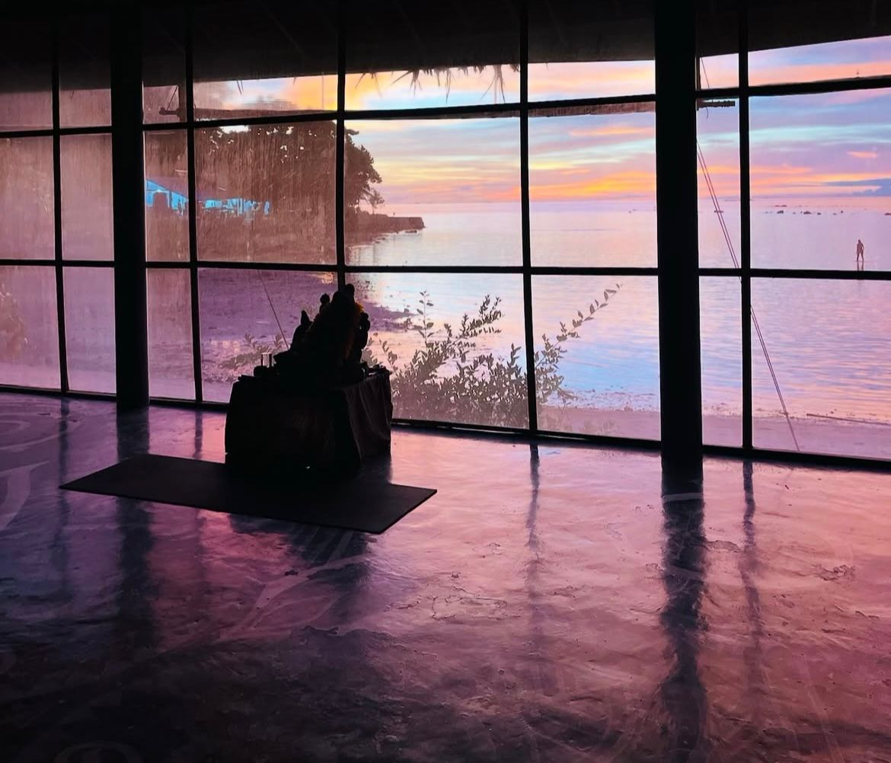
Adada birçok merkez günlük yoga dersleri, haftalık retreat programları ve meditasyon seansları düzenliyor. Sabah gün doğumunda yapılan yoga dersleri ve gün batımına karşı yapılan meditasyonlar oldukça popüler. Doğanın içinde, deniz manzaralı açık stüdyolarda yoga yapmak da Koh Phangan’daki deneyimin önemli bir parçası.
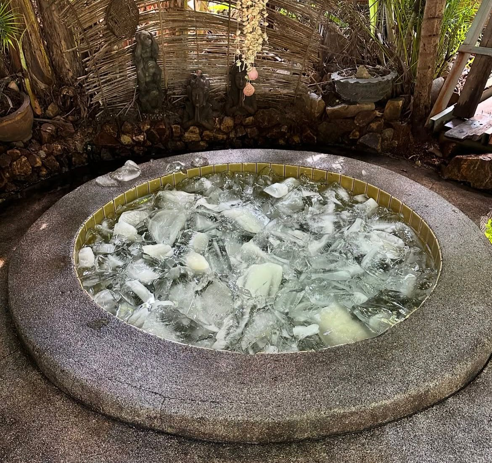
Bizim en sevdiğimiz deneyimlerden biri ise ice bath (buz banyosu) ve nefes terapileri oldu. Adada birçok wellness merkezinde büyük buz dolu havuzlara giriliyor ve genellikle rehber eşliğinde nefes egzersizleri yapılıyor. Önce nefes çalışmalarıyla vücudu hazırlıyorsunuz, ardından birkaç dakika buz gibi suyun içine giriyorsunuz. Bu uygulamanın bağışıklık sistemini güçlendirdiği, kan dolaşımını hızlandırdığı ve zihinsel dayanıklılığı artırdığı söyleniyor. İlk başta biraz göz korkutucu görünse de, çıkınca inanılmaz enerjik ve canlı hissettik. Biz de adada kaldığımız 10 gün boyunca tam iki kez Xantiva KohPhangan’da bu buz banyosuna katıldık. Gerçekten kesinlikle tavsiye ediyoruz.
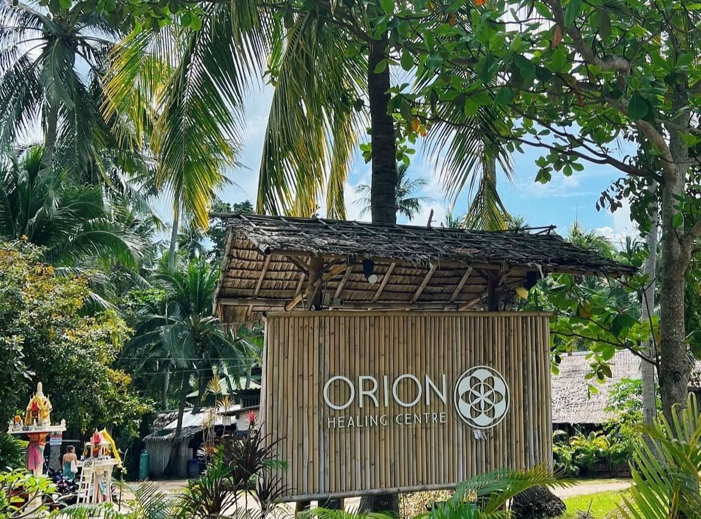
Bu tür deneyimleri sunan merkezlerden bazıları şunlar:
- Orion Healing Centre (Yin Yoga, Vinyasa Flow, Medicine Song Circle, Self-Sabotage
Healing, Steam Room, Ice Bath and Pool)
- Ananda Yoga & Detox Center (Kundalini, Power Vinyasa Flow)
- The Yoga House (Vinyasa Flow, Belief with Hypnotherapy, Shamanic Breathwork and
Pool)
- Xantiva Health Club (Ice Bath, Cold Plunge, Sauna, Onsen, Bonfire and Ocean-view
Gym)
- Wild Wood Beach Fitness (Gym on the beach, Ice Bath, Sauna, Steam Room and Pool)
Biz Xantiva Health Club ve Orion Healing Centre’da birer gün
geçirdik ve her biri gerçekten ayrı
ayrı inanılmaz deneyimler sundu. Xantiva Koh Phangan’da buzların taş küvete nasıl yerleştirildiği
sürecine de tanık oluyorsunuz. Buraya direkt gidebiliyorsunuz,
rezervasyon gerekmiyor. Orion Healing Centre ise biraz daha planlı; buraya katılmak için rezervasyon
yapmak gerekiyor.
Günlük, haftalık veya aylık programlar ve fiyat detayları için
Orion Healing Centre web sitesini
ziyaret edebilirsiniz.
Ayrıca burada konaklama imkanı da varmış. Gerçekten buraya bayıldığımız için bir dahaki gelişimizde
en az 2 gün burada konaklamayı planlıyoruz.
Yoga ve İnziva merkezlerine yakın Srithanu bölgesindeki konaklamalara buradan göz atabilirsiniz :
www.booking.com
İster bir günlük katılın, ister adada uzun kalıp bir haftalık yoga veya
wellness programlarına dahil
olun. Ama mutlaka dahil olun! Bu inziva merkezleri adeta bir “reset” düğmesi gibi, bedeninizi ve
zihninizi sıfırlamanız için mükemmel bir fırsat, bizden söylemesi..
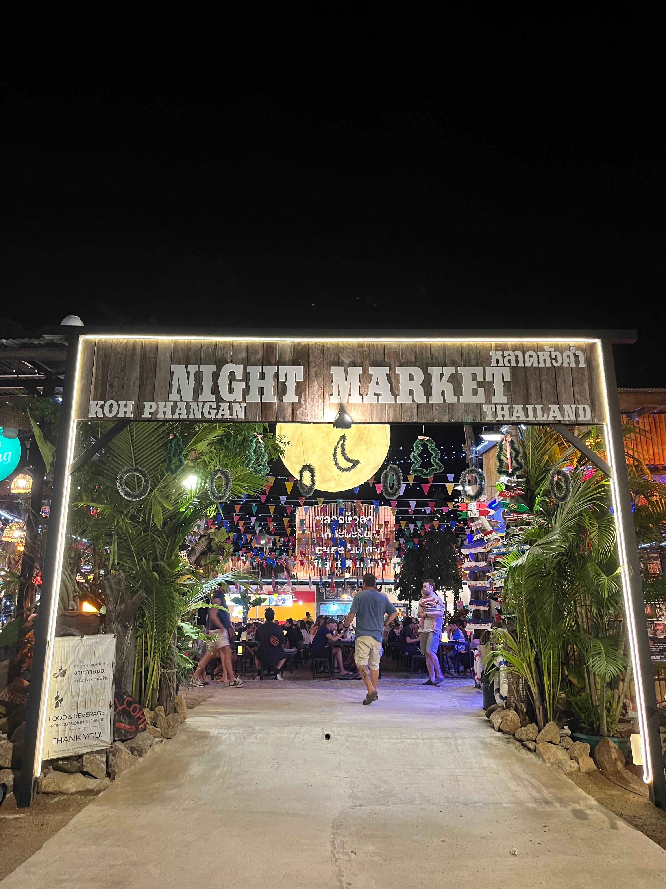
Her akşam yolumuz buraya düştü ve gerçekten inanılmaz keyifliydi. Yemekler aşırı lezzetli ve temiz, istediğimiz her içeceği bulabiliyorsunuz. Taze meyve ve tatlılar da ayrı bir güzellik katıyor. Fiyatlar da çok uygun: sadece 150‑200 Baht’a hem yemeğinizi hem tatlınızı yiyebiliyorsunuz.
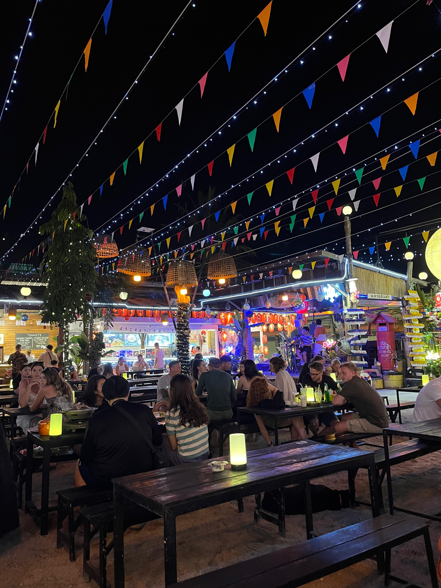
Kimi akşamlar yerel müzik de oluyor, ortam ışıl ışıl ve çok canlı.
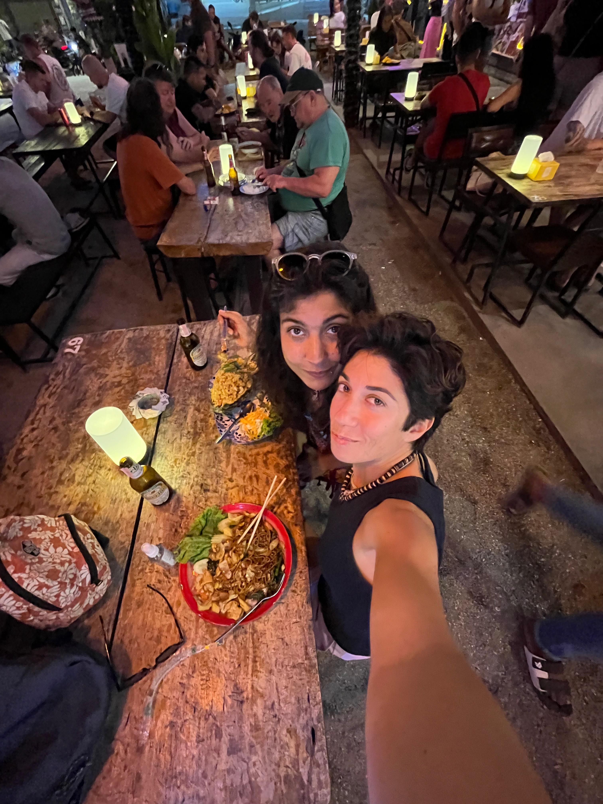
Bizim favorimiz Pineapple Fried Rice ve Pad Thai oldu; özellikle Pineapple Fried Rice’ı mutlaka denemelisiniz.
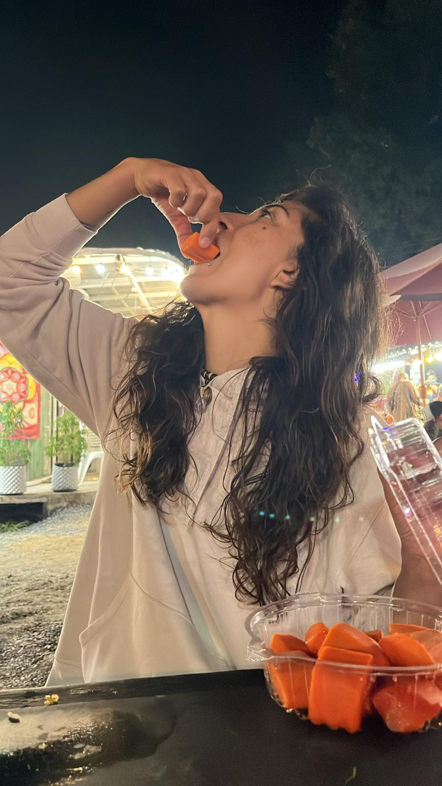
Ve tabii ki bir papaya canavarı Özge. Meyveler öyle taze ve lezzetli ki akşam olmasına rağmen
papaya, ananas, mango, dragon fruit(beyaz veya kırmızı iç, siyah çekirdekli), passion fruit(ekşi
ve aromatik), pomelo(hafif ekşi ve tatlı)… ne
isterseniz bulabiliyorsunuz. Taze taze bulmuşken affetmeyeceksiniz, biz de öyle yaptık 🙂
Buraya
uğramadan geçmeyin. Akşamları herkes buraya akın ediyor ve atmosfer gerçekten çok ama çok
keyifli.
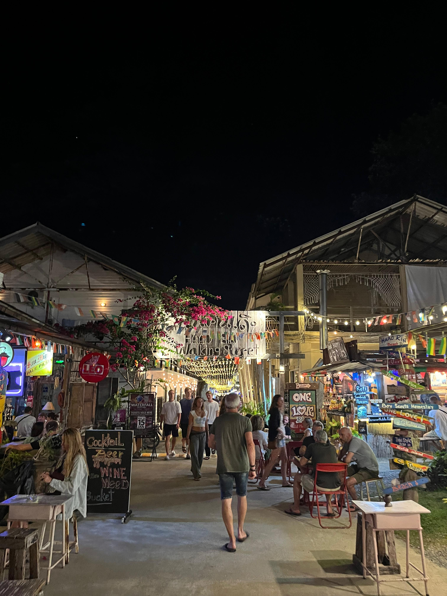
Haad Rin Walking Street, adanın en hareketli akşam noktalarından biri. Güneş batarken sokaklar ışıl ışıl oluyor, her köşede barlar, kafeler, sokak yemekleri ve hediyelik eşya tezgahları var.
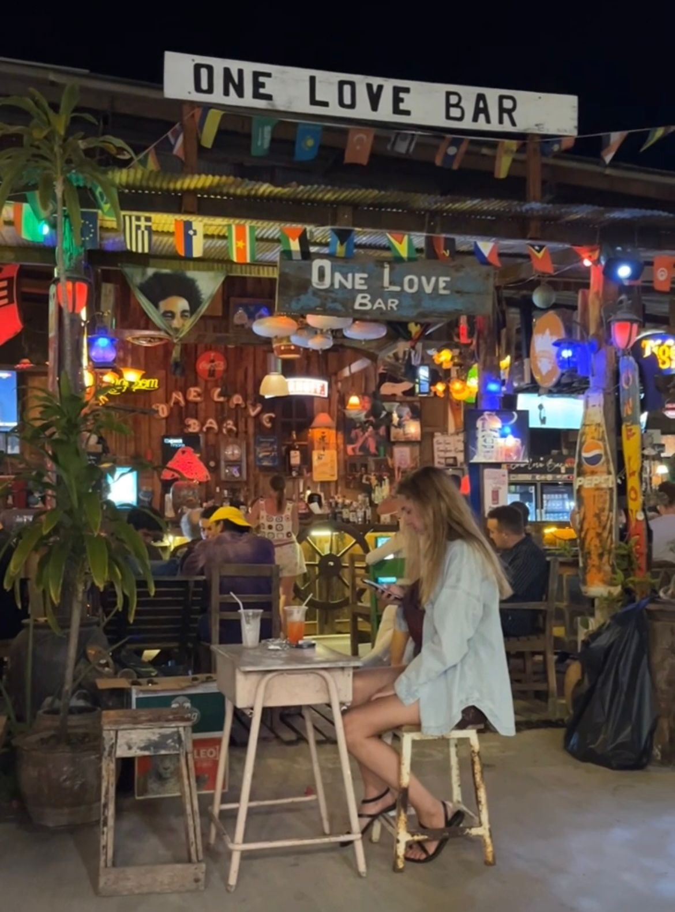
Biz özellikle akşam yürüyüşleri için burayı çok sevdik. Yemek konusunda pek çeşitlilik yok ama atıştırmalık muhakkak bir şeyler bulabiliyorsunuz. Biz burada bar keyfi yapalım dedik. Müzikler kesinlikle rahatsız etmiyor; ortam canlı ve keyifli. Sosyalleşmek için çok uygun; sıcak ve samimi.
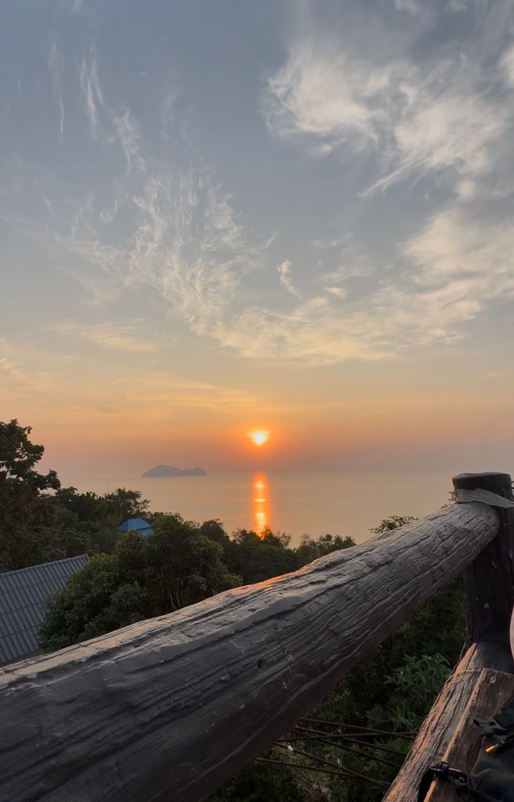
Koh Phangan’da bir akşam kendimizi Amsterdam Bar’a attık ve gerçekten çok keyif aldık. Küçük ama sıcak bir ortamı var; içeri girdiğiniz anda rahat bir ortam sizi sarıyor. Ayrıca her günün programı farklı oluyor, yani her akşam burada başka bir konseptle karşılaşabiliyorsunuz.
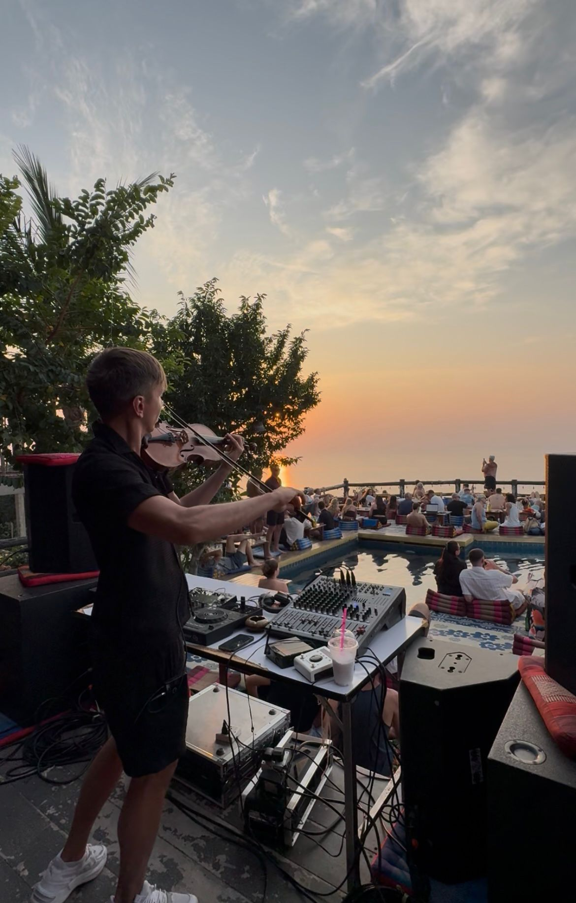
Biz gittiğimizde güneşin karşıdan harika batışını izlerken DJ’in kemanla elektronik müzik karışımı çaldığı an gerçekten harikaydı. Ortam resmen adadaki tüm sakinlik noktalarına dokunuyor ve insanı huzurlu hissettiriyor.
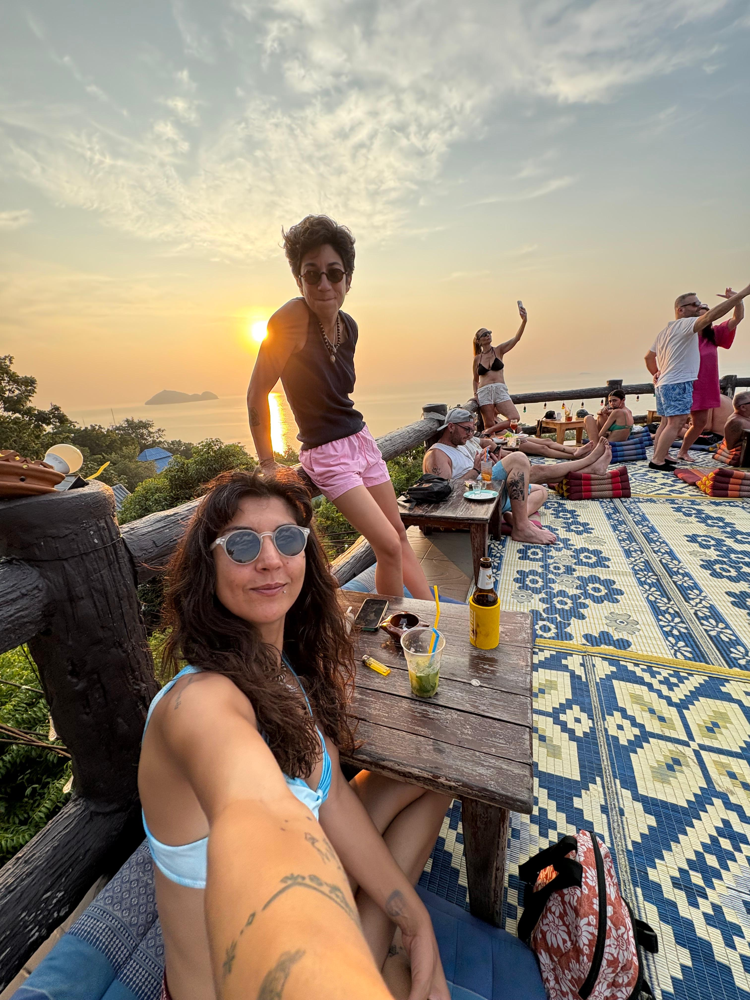
Barın kokteylleri hem yaratıcı hem de oldukça lezzetli; biz özellikle tropikal karışımları denedik ve
bayıldık. Müzik ne çok yüksek ne de rahatsız edici, sohbet edebileceğiniz ve aynı zamanda ritme
kaptırabileceğiniz mükemmel bir denge var. İster minderlerde serilip güneşin batışını izleyebilir,
ister havuza girip serinleyebilir, ister sadece oturup etrafın enerjisini hissedebilirsiniz.
Mekan gerçekten harika, fiyatlar da çoğu yerde olduğu gibi oldukça normal ve ulaşılabilir. Bar
her
gün 12.00 – 01.00 saatleri arasında açık, ama en güzel saatler kesinlikle gün batımına
yakın
zamanlar. Zaten adada gün batımını izlemek için en gözde yerlerden biri diyebiliriz.
Biz bir akşamımızı burada geçirdik ama eminiz ki buraya ayıracağınız ikinci veya üçüncü bir akşam da
çok
keyifli olur. Kesinlikle Koh Phangan’daki listenizde olması gereken bir yer!
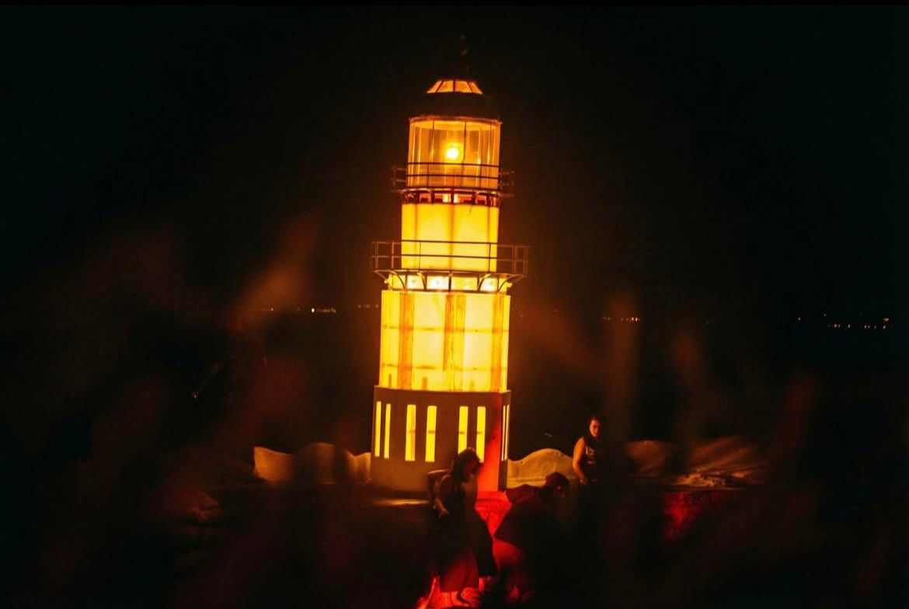
Koh Phangan’daki en ikonik gece kulüplerinden biri olan Lighthouse, Haad Rin’e oldukça yakın ama kalabalığın biraz dışında, küçük bir koyun içinde yer alıyor. Aracınızı bıraktıktan sonra mekana ulaşmak için denizin üzerinden uzanan uzun bir tahta iskeleden yürüyorsunuz. Daha o yürüyüş sırasında bile atmosfer sizi içine çekmeye başlıyor ve içeri girerken sanki gizli bir partiye gidiyormuşsunuz gibi bir his oluşuyor. Bu da Lighthouse’u daha ilk andan farklı ve özel kılıyor.
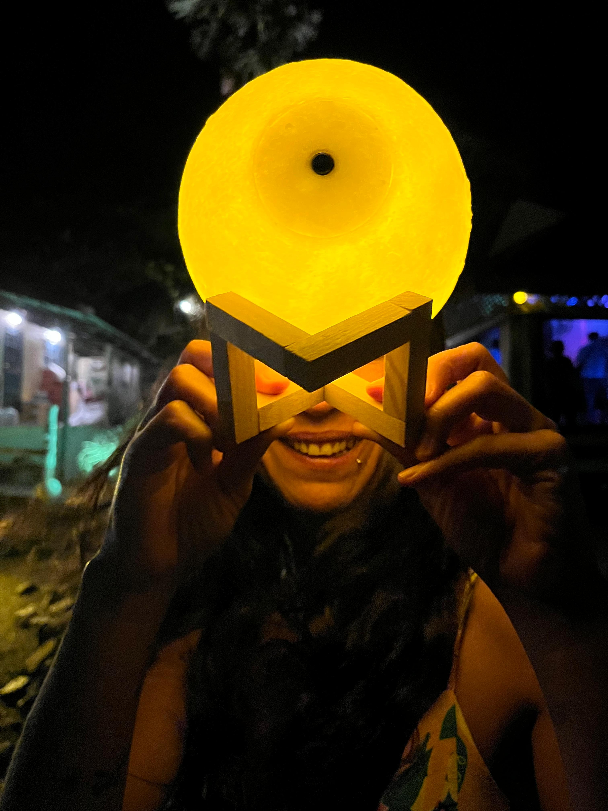
Lighthouse özellikle elektronik müzik ve underground parti atmosferi ile biliniyor. Çoğu gece techno, house ve melodic setler çalan DJ’ler sahne alıyor. Burası büyük kulüpler gibi aşırı kalabalık veya gürültülü değil; daha çok müziği gerçekten seven insanların geldiği, samimi ve enerjik bir ortam var.
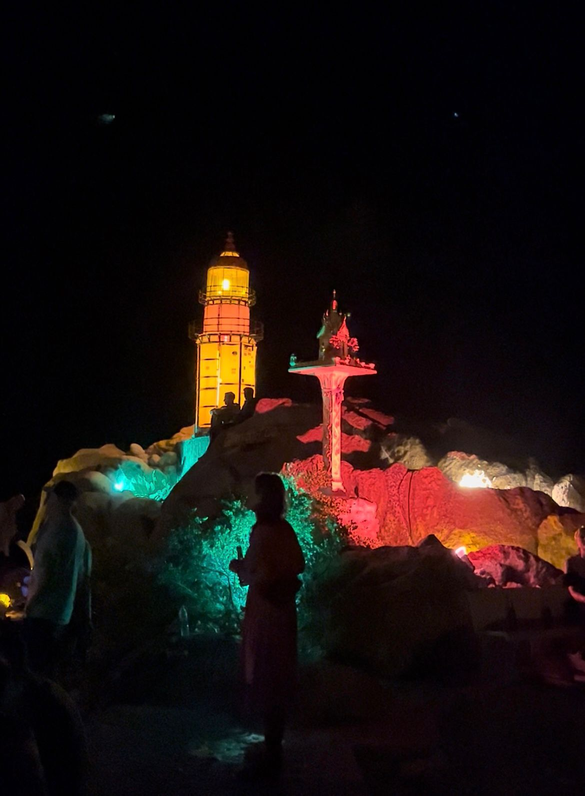
Mekanın en güzel taraflarından biri de konumu. Küçük bir koyun kenarında olduğu için
bir yandan müzik
çalarken bir yandan denizin sesi geliyor. İçeride dans edebilir, dışarı çıkıp sahilde biraz nefes
alabilir ya da yıldızların altında oturup ortamın keyfini çıkarabilirsiniz. Bu da Lighthouse’u Koh
Phangan’daki birçok partiden farklı kılıyor.
Partiler genellikle haftanın belirli günlerinde düzenleniyor. Özellikle Salı ve
Cuma geceleri
Lighthouse oldukça hareketli oluyor. Mekan genelde 21.00 civarında açılıyor ve gün
doğumuna kadar
devam ediyor. Eğer erken giderseniz güzel bir avantaj da var: 22.00’den önce giriş
genellikle
ücretsiz, sonrasında ise kapıda yaklaşık 400 Baht civarında bir giriş ücreti
alınıyor.
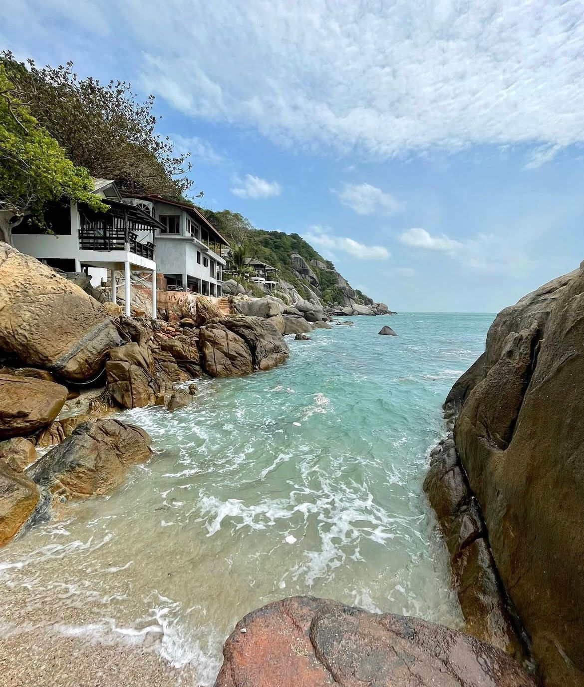
Bir diğer güzel tarafı ise burada bungalowlarda konaklama imkanının da olması. Lighthouse’un hemen
arkasında, denize bakan basit ama manzarası harika bungalowlarda kalabiliyorsunuz. Odaların çoğunda
denizi gören balkonlar ve hamaklar bulunuyor; sabah uyandığınızda direkt okyanus manzarasıyla güne
başlamak oldukça keyifli. Konaklama seçeneklerine buradan göz atabilirsiniz: www.booking.com
Eğer hem daha alternatif ve
kaliteli müzikli bir ortam arıyorsanız hem de biraz daha sakin, doğayla iç içe bir yerde kalmak
istiyorsanız Lighthouse kesinlikle listenizde olmalı.
Adada hem yerel Tay mutfağını deneyebileceğiniz küçük sokak tezgahları hem de manzaraya karşı uzun
uzun vakit geçirebileceğiniz restoran ve kafeler bulunuyor. Özellikle gece pazarları, sahil
restoranları ve gün batımı barları adanın en keyifli yerleri.
Biz de Koh Phangan’da geçirdiğimiz süre boyunca farklı yerleri denemeye çalıştık ve en
sevdiklerimizi bu listede topladık. Eğer adaya geliyorsanız, hem yerel lezzetleri tatmak hem de
güzel manzaralar eşliğinde keyifli vakit geçirmek için bu önerilere mutlaka göz atmanızı tavsiye
ederiz.
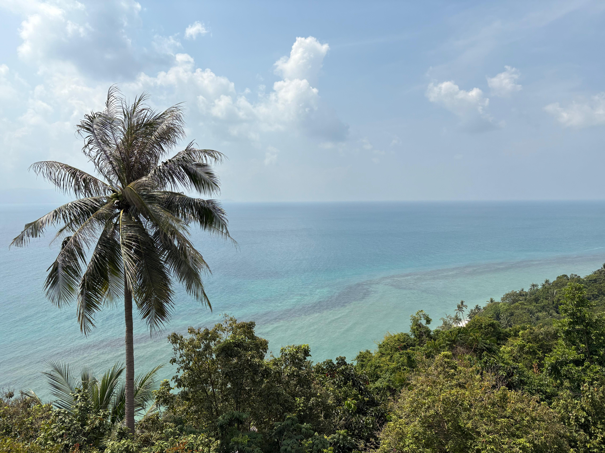
Koh Phangan’da kahve içip manzaraya karşı biraz soluklanmak isterseniz Blue Ocean Coffee
Restaurant
gerçekten çok keyifli bir durak. Denizi yukarıdan gören konumu sayesinde oturduğunuz anda sizi çok
sakin ve huzurlu bir atmosfer karşılıyor.
Biz Koh Phangan’da kaldığımız süre boyunca kahvaltılarımızın çoğunu burada yaptık. Yanında güzel bir
kahve ile güne başlamak gerçekten çok başarılıydı. Kahveleri her seferinde taze ve oldukça
lezzetliydi. Kahvaltı menüsünde de dolu dolu tabaklar var; hem doyurucu hem de oldukça tatmin edici
seçenekler sunuyorlar.
Manzara ise buranın en güzel taraflarından biri. Masaya oturup kahvenizi yudumlarken karşınızda
uzanan turkuaz denizi izlemek gerçekten şahane bir his. Eğer adada güne güzel bir kahvaltıyla
başlamak ya da gün içinde manzaraya karşı kahve molası vermek isterseniz burayı mutlaka listenize
ekleyebilirsiniz.
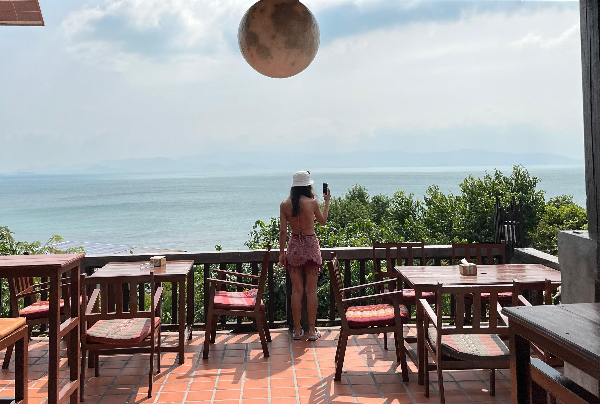
Koh Phangan’da uğradığımız bir diğer keyifli durak da Cafe 2401 and Guesthouse oldu. Burası küçük, samimi ve oldukça rahat bir atmosfere sahip. İçeri girdiğinizde biraz daha yerel ve sakin bir yerde vakit geçiriyormuş hissi oluşuyor.
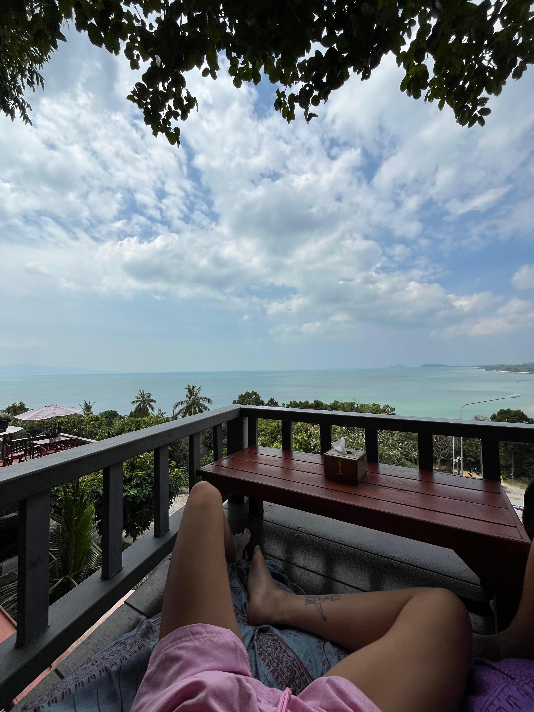
Kahvaltı için seçenekler çok geniş değil ama çoğu zaman yeterli oluyor. Özellikle sandviçleri ve patates kızartması başarılı. Yanına güzel bir kahve söylediğinizde gayet keyifli bir kahvaltı yapabiliyorsunuz. Fiyatlar da Blue Ocean Restaurant'a göre daha uygun.
Manzarası da oldukça başarılı. Özellikle armut koltuklara uzanıp manzaraya karşı keyif yapabileceğiniz rahat alanları var. Bazen sadece oturup kahvenizi içmek ve biraz dinlenmek için bile uğramak isteyebilirsiniz.
Koh Phangan’da kahve içmek ve biraz soluklanmak için sevdiğimiz bir diğer yer de Common Grounds Coffee oldu. Burası tropik bitkilerle çevrili oldukça ferah ve sakin bir atmosfere sahip. Bahçenin içinde küçük bir havuz ve etrafında oturma alanları bulunuyor.
Kahveleri oldukça başarılı ve kaliteli çekirdeklerle hazırlanıyor. Menüde kahvenin yanında
sandviçler, salatalar, ev yapımı tatlılar ve taze meyve suları gibi seçenekler de bulunuyor.
Kahvaltı için de oldukça başarılı seçenekleri var ve doyurucu.
Biz buraya kimi zaman kahvaltı kimi zaman da kahve molası vermek için uğradık.
Adada birçok yere giderken neredeyse her seferinde yolumuzun üzerinde kalıyordu, bu yüzden konum
olarak da oldukça başarılı bir noktada diyebiliriz. Ortam oldukça rahat; isterseniz bahçede oturup
kahvenizi içebilir, isterseniz havuz kenarında vakit geçirebilirsiniz. Ayrıca Wi-Fi ve çalışma
alanları olduğu için dijital kişilerin de sık tercih ettiği bir kafe. Bu yüzden çoğu zaman yer
bulmak biraz zor olabiliyor, özellikle yoğun saatlerde masalar hızlıca doluyor.
Mekan her gün 08.00 – 17.00 saatleri arasında açık, bu yüzden özellikle sabah
kahvesi veya öğle
arası bi' tatlı molası için güzel bir seçenek.
Koh Phangan’da kahvaltı ve kahve için en sevilen yerlerden biri kesinlikle Bubba’s
Coffee. Ada
genelinde oldukça bilinen bir yer ve özellikle kahvaltı saatlerinde ciddi bir hareketlilik oluyor.
Biz de buraya bir sabah kahvaltı için uğradık ve gerçekten oldukça memnun kaldık.
Kahvaltı menüsü oldukça zengin ve tabaklar gerçekten dolu dolu geliyor. Özellikle avokadolu
kahvaltılar, yumurtalı tabaklar ve brunch seçenekleri
oldukça başarılı. Kahve konusunda da oldukça
iddialılar; çekirdekler genellikle Tayland’ın kuzeyindeki Chiang Mai ve Chiang Rai bölgelerinden
geliyor. Bu yüzden kahveler hem taze hem de gerçekten çok lezzetli.
Mekan genellikle 07.00 – 17.00 saatleri arasında açık, bu yüzden özellikle kahvaltı veya brunch için oldukça ideal. Fiyatlar da adadaki çoğu iyi kahvaltı mekanında olduğu gibi orta seviyede diyebiliriz; ne çok ucuz ne de pahalı. Ama gelen tabakların doluluğunu ve lezzetini düşününce kesinlikle karşılığını verdiğini söyleyebiliriz.
Ortamı da oldukça ferah ve rahat. Uzun uzun kahvaltı yapıp sohbet edebileceğiniz, kahvenizi içip biraz vakit geçirebileceğiniz keyifli bir atmosferi var. Zaten bu yüzden çoğu zaman oldukça kalabalık oluyor. Eğer Koh Phangan’da güzel bir kahvaltı ve iyi bir kahve arıyorsanız Bubba’s Coffee kesinlikle listenizde olması gereken yerlerden biri.
Koh Phangan’da gün batımını izlemek için keşfettiğimiz en keyifli yerlerden biri de Top Rock
Bar
oldu. Burası biraz gizli kalmış bir yer gibi; aracınızı park ettikten sonra merdivenlerden yukarı
doğru
yürüyerek ulaşıyorsunuz. Yukarı çıktığınızda ise sizi gerçekten çok güzel bir manzara karşılıyor.
Tepede yer aldığı için hem denizi hem de adanın palmiyelerle kaplı manzarasını yukarıdan görmek
mümkün.
Atmosferi oldukça rahat ve samimi. Büyük ve gürültülü barlardan farklı olarak burada daha sakin bir
ortam var. Bir şeyler içip manzaraya karşı oturmak, özellikle de gün batımını izlemek gerçekten çok
keyifli oluyor. Zaten gün batımına yakın saatlerde biraz kalabalıklaşabiliyor, yer bulmak da haliyle
zorlaşıyor, bu yüzden erken
gitmek iyi bir fikir.
Mekan genellikle 11.00 – 00.00 saatleri arasında açık ve hem içecek hem de yemek
servisi bulunuyor.
Fiyatlar da adadaki birçok yerde olduğu gibi oldukça makul; genelde 100-200 Baht
civarında yiyecek
ve içecek seçenekleri bulabilirsiniz.
Koh Phangan, Tayland’ın en özgür ruhlu adalarından biri. Çoğu kişi burayı sadece
Full Moon Party ile tanıyor ama ada aslında bundan çok daha fazlası.
Masmavi denizi, palmiyelerle çevrili plajları, gün batımında birbirinden farklı renklere dönen
tepeleri ve sakin koylarıyla hem hareketli hem de huzurlu bir atmosfere sahip. Gün içinde sahillerde
yüzüp keşfe çıkıyor, akşamları ise manzaraya karşı gün batımını izlerken adanın o rahat
temposunu gerçekten hissediyorsunuz.
Koh Phangan’ı özel kılan şeylerden biri de adanın sunduğu farklı deneyimler. Bir gün
gizli bir plaj keşfedebilir, başka bir gün gün batımını izlemek için tepedeki bir bara
çıkabilir ya da akşam olduğunda gece pazarlarında lezzetli sokak yemeklerini deneyebilirsiniz.
İsterseniz partilere katılıp sabaha kadar dans edebilir, isterseniz yoga merkezlerinde
gününüze çok daha sakin bir başlangıç yapabilirsiniz. Ada tam anlamıyla
her ruh haline uyum sağlayan bir yer.
Belki de Koh Phangan’ı bu kadar özel yapan şey tam olarak bu denge. Gün içinde doğanın ve
denizin tadını çıkarırken akşamları adanın enerjisine karışabiliyorsunuz. Bir gün sakin bir
plajda kitap okuyarak vakit geçirirken, başka bir gün kendinizi bir gece pazarında ya da
manzaralı bir barda gün batımını izlerken bulabiliyorsunuz. Bu özgür ve rahat atmosfer
insanı hemen içine çekiyor ve çoğu zaman planladığınızdan daha uzun süre adada kalmak
istemenize neden oluyor.
Peki, senin Koh Phangan’da en sevdiğin yer hangisi oldu?
Aşağıya yorum bırak, mutlaka duymak isteriz!
E-posta adresiniz yayımlanmayacaktır. Gerekli alanlar * ile işaretlenmiştir.